Revised draft or updated version of St. Paul's Church historical compilation.
Presbyterians
in Black River

A
BRIEF HISTORY
OF
PRESBYTERIANS
IN BLACK RIVER
NEW BRUNSWICK
(Revised)
Donald
E. M. Glendenning, C.M.
Charlottetown,
P.E.I.
Revised
®2011
TABLE
OF CONTENTS
The Community
The First Church
St. Stephen’s Presbyterian Church
Church Union
Presbyterians After Church Union
St. Paul’s Presbyterian Church
Church Organizations
Cemetery
Memories
Appendices
A MacDougall Excerpt
B Documents
C Clippings
D Photos
E Weddings
F Baptisms
G Funerals
H Ministers
I Church Officials
J Honour Roll
K Some Firsts
M Gifts and Memorials
N Bibliography
DEDICATION
PREFACE
The
author grew up in the community of Black River and in St. Paul’s
Presbyterian Church. St. Paul’s was an integral part of our family
life; my mother and father were among the founders. This paper is an
informal and brief record of St. Paul’s Church, in the context of
more than two centuries of Presbyterianism along the south shore of
the Miramichi River in New Brunswick, Canada.
Much of
the information was gathered during brief visits to the Miramichi;
longer visits would have provided greater access to church records,
newspapers of the day and interviews with church members. While care
was taken in gathering information, transcription errors are
possible. While the revision includes all of the original material,
it has also allowed me to add some additional information on Church
Union of 1925, add photos and make some minor changes in the text and
appendices.
The
author would be remiss not to mention the major contribution to Black
River history made by Mr. A. W. MacDougall through his book, Black
River and its First Settlers. This book has become a major
source of information for historians and genealogists alike in their
search for roots in the Black River area. Pages 31-54 from Mr.
MacDougall’s book are reprinted and included with permission of Mr.
MacDougall’s daughters, Edna (MacDougall) Cameron and Margaret
MacDougall.
Thanks
also are extended to many people especially Kenneth Glendenning,
Clerk of Session, St. Paul’s Presbyterian Church, for access to
clippings, photos, early histories and other papers.
The
Miramichi area of New Brunswick has a long and proud history with
Presbyterians playing key roles. I am delighted to provide this
record, however brief, of their activities in Black River Bridge.
Don Glendenning
62 Queen Elizabeth
Drive
Charlottetown, PE
C1A 3A9
SIGNIFICANT
DATES
1797 Visit by Dr. MacGregor from Pictou, Nova Scotia
1812 Presbyterian church built in Bay du Vin (used by other
denominations) built at “Ullock’s Point” on the west side of
the Bay du Vin River near its mouth.
? Occasional
visits by traveling missionaries
? Visit by Rev. Dr. McGregor, Presbyterian missionary from Pictou,
N.S.
? Rev.
Mr. Jones took up residence in Bay du Vin
1818 Residents of Bay du Vin, Burnt church and Point Aux Carr
petitioned for a full-time minister.
1834
Arrival of Rev. Simon Fraser as a full-time minister
1834 Black River Presbyterians met to consider the erection of a
church on Gunn’s Point
1836 St. Stephen’s Presbyterian Church opened on Gunn’s (church)
Point.
1838 First Communion Service
1905 Purchase of first organ approved
1880 Construction of the first Manse
1906 Construction of a new church building
1925 Congregational vote favours forming United Church of Canada
Continuing
Presbyterians meet in homes and schools
1926 John
Robertson Women’s Missionary Society formed
Ladies League Formed
Sunday School organized
Mission Band Formed
Kenneth Glendenning, Roy Watling and Norman Glendenning baptized
1928 St
Paul’s Presbyterian Church formally constituted
First formal Session meeting of held
First communicant members formerly admitted
1929 Resolution
passed to construct new sanctuary
1930 Presbyterian
Young Peoples Society formed
New
sanctuary, St. Paul’s Presbyterian Church, formally dedicated
? St. Paul’ Presbyterian and Knox Presbyterian in Kouchibouguac
form a two-point charge
? St. Paul’ Presbyterian, Knox Presbyterian in Kouchibouguac and
Calvin Presbyterian in Chatham form a three-point charge
1950 St. Paul’s and Calvin Presbyterian Church in Chatham form a
two-point charge
THE
COMMUNITY
The
name, Black River, is thought to have come from the MicMac word
Matquantigook that probably meant “black river”; the Black River,
with its tributaries principally the Little Black River but better
known as the Little Branch River, flows into Bay due Vin and the
inner Miramichi Bay. At one time, the community of Black River
appears to have extended as far east as Bayside (Miramichi) and
perhaps as far as the Bay due Vin River. The mouth of the Black
River, around what I knew as the Victoria Bridge and Hexham area, was
settled before 1800; most if not all the land around the Little
Branch River and along the south side of the Black River as far as
St. Paul’s Presbyterian Church, was granted on June 3, 1812.
The
earliest settlers in the Black River as we know it today were United
Empire Loyalists and Highland Scots; some had settled initially along
the Saint John River, moved north to the Nashwaak and eventually
relocated to the Miramichi. Settlers in Bay du Vin tended to be
English and followers of the Church of England with Black River being
Scottish and Presbyterian. From MacDougall’s book we learn that
Loyalists included Major James Macdonald, Farquahar MacRae, Angus
MacDonald, Neil MacGraw, Dougald Campbell, James Gunn, Gregor
McKinnnon, Donald MacVicar, John Bailey Williston, Rev. Samuel Jones
and William Gardiner. From Scotland came the Cameron brothers, John
MacLean, Hugh MacDougall, the MacNaughton family and William
MacBeath. To our lists we must add Peter Kelly who came from
Ireland, the MacLeods, Sinclairs, Fraser, etc and many other early
settlers but not included in MacDougall’s book. Many residents of
the same name can still be found in the community today
The
land was heavily wooded, winters were long and cold and life was
hard. But pioneers were hardy folk who were determined to carve out
a new life for themselves, their families and their offspring. These
settlers brought crude axes, shovels and other implements to clear
land, plant crops and build homes. And they also brought their
religion – mostly Presbyterian.
THE FIRST CHURCH
At
first the settlement was served by itinerant ministers and
missionaries. Among the visiting ministers was the Rev. Dr. James
Drummond MacGregor, a Scot who had been sent out to minister to the
Presbyterians in Pictou, Nova Scotia. In addition to serving the
folk of Pictou, MacGregor traveled throughout New Brunswick, Nova
Scotia and Prince Edward Island. Each visit to a community usually
lasted several days, and even weeks, and included preaching, praying,
and religious conversations. The Memoir of Rev. James MacGregor,
D.D. written by his Grandson, Rev. George Patterson, recounts
MacGregor’s visit to Black River (p.316) as follows:
“On the first and second visits to the Miramichi in 1797 and
1807, he preached and baptized at Black River, Bay du Vin, and on
both sides of the Miramichi, up as far as the point, so called, at
the junction of the North and South-west branches. Those who
recollect him remark his happy faculty in introducing religious
conversation.”
And
further on:
“His
being present at the induction of Mr. Thompson in 1817 is well
remembered.”
A. W.
MacDougall reports that a Rev. Jones resided in Bay du Vin but his
religious affiliation is not known.
In
1812, a church, thought to be Presbyterian, was built in at Tuckers
Point, at the mouth and on the west side of the Bay du Vin River.
(While Tucker’s Point was used in conversation by several people,
the name does not appear in Geographical Names of New Brunswick
by Rayburn, 1975.) Some gravestones are still to be found in the
area. The church served all Protestants in the area. A. W.
MacDougall reported that a contract for the building of the church
was in the possession of a “gentleman in Bay du Vin” and that the
document:
“ bore the signature
of the contractor, a Mr. Gray of Chatham, and also the names of three
men representing the people, John B. Williston, Farquhar MacRae and a
Mr. McLeod. Mr. Williston lived in Bay du Vin, Mr. McRae in Bay
Side, and Mr. McLeod in Black River.
The
church was a small building of frame construction, and was built
close to the shore on the westerly side of the south of Bay du Vin
River, at a spot since known as ‘Ullock’s Point’, from the name
of the man who owned the surrounding land, and where a ferry
connected with the other side of the river. It was used for public
worship as occasion required until the building of the first church
on the site at Black River, and then fell into disuse…
A
small plot of land adjoining the church was used as a cemetery, and a
considerable number of people were interred there.”
ST STEPHEN’S PRESBYTERIAN CHURCH
Given
that Black River was founded by Scots, a growing community and that
most of the Presbyterians lived several miles from Tucker’s Point,
a community of people who worshipped mostly in the English tradition,
it is not surprising that talk soon turned, first to finding a
Presbyterian minister and later to constructing a place of worship.
A. W. MacDougall reports that a public meeting was held in Bay du Vin
in 1818 with a view to securing a resident minister to serve Bay du
Vin, Tabusintac and Burnt Church - a minister who could speak in
Gaelic as well as English since “there are several amongst us who
do not understand the English”.

First
Presbyterian Church in Black River (1834)
(Source
Unknown)
In
1834, a public meeting was held in Black River at which it was
decided to petition for a minister to serve both Black River and
Tabusintac. In response to the request, the Rev. Simon Fraser was
dispatched to serve their needs. I do not know if the Rev. Fraser
initially served both Black River and Bay du Vin but it appears that
shortly thereafter he became the minister for Black River only.
On
November 10, 1834 a meeting was held in Black River at the residence
of Mr. Archibald Cameron and a committee was commission to proceed
with the erection of a church. The site for the church was Gunn’s
Point, already being used as a burial ground, part of Lot #4 granted
to Alexander Gunn on June 3, 1812. By then, the land was owned by
Enoch Godfrey who gave or sold an acre for the new church. Church
building committee members were:
Alexander MacBeath, Chairman
Angus Sinclair, Secretary
Alexander MacDonald
Hugh (Ewen) Cameron
Alexander Cameron
Peter MacDougall
Enoch Godfrey
W.
MacDougall describes Gunn’s Point (part of Lot #4 granted to
Alexander Gunn on June 3, 1812) as follows:
“The
proposed site for the church, which has long been known as Church
Point, is a peninsula several acres in extent, jutting out from the
mainland on the South Side of the Black River about three miles from
its mouth, and connected to the shore by a narrow neck of land. It
has dry sandy soil, and at that time was partly covered with a heavy
growth of timber. It is an ideal location for a church, probably
without parallel in the whole Province. A portion of it had
previously been used as a burial ground, and there it was decided to
build the church.”
On
April 21, 1835 a contract was awarded to William Porteous to erect
the church; structural timber was cut locally. The building was 45
feet long by 30 feet wide with an 18-foot wall. On November 20,
1836, the first house of worship, St Stephen’s Presbyterian Church,
was formally opened with the Rev. Mr. Fraser as its first minister.
In the
years that followed, St. Stephens Church was beset by two major
problems. The financial problems resulted from the costs of
construction and the also the cost of ongoing operations. (This is
still a challenge to churches in the 21st century.)
By the
turn of the century, St. Stephen’s sanctuary had become quite
dilapidated and, instead of making repairs, a decision was taken to
build a new sanctuary. The result was the opening of St. Stephen’s
Presbyterian Church, now St. Stephen’s United Church, on December
30, 1906.
Church
differences in Scotland were transported to Canada and resulted in
tensions within St. Stephens Presbyterian Church in Black River. The
reader is referred to Black River and its First Settlers for
further information.
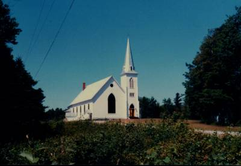
Second
Presbyterian Church in Black River (1906)
(Glendenning
Collection)
CHURCH UNION
Divisions
within the Presbyterian Church in Scotland, it seems, went on
forever. Most resulted from differing views as to the proper or
acceptable relationship between church and state. Scots were not
prepared to accept a state church, as was the case in England.
Perhaps another cause for dissension was the strong view that no
minister or church hierarchy should stand between a person and
his/her God. Then there was the issue of churches being able to
appoint their own minister rather than have a minister appointed by
the land owner or proprietor or some church body. By 1843 there were
four different Presbyterian churches in Scotland – and Scots
brought their differing views with them when they came to Canada.
The early mid -1800’s witnessed a movement towards unification
among a number of Presbyterian denominations that resulted, by 1875,
in the creation of the Presbyterian Church in Canada - and
discussions with other Presbyterians continued.
Other
denominations were coming together as well. Union within the
Methodist denomination was achieved by 1884 and within the
Congregationalist churches by 1906. The Church of England, as early
as 1836, had appointed a committee to explore possible union with
like-minded denominations. Talk of further unification, therefore,
was not unexpected. In fact, at the inception of the Presbyterian
Church in Canada, Dr. John Cook, the Moderator, said, “far larger
union is in store”. Others expressed similar sentiments. A
federation of denominations was also considered an option.
While
discussions were going on, a number of churches cooperated in the
Sunday School Association of Canada, Temperance Movement, Evangelical
Alliance, etc.; this helped to break down other denominational
barriers. There was even a sharing of social services between
congregations, cooperation in the training of clergy and a wider
discussion of matters theological.
In the
late 1800’s, multi-party discussions were held within the
Presbyterian family and among Presbyterians, Methodists,
Congregationalists and the Church of England with a view to bringing
all together into a single Protestant denomination. Based on my
reading, it appears to have been clergy led and clumsily executed.
By 1904
discussions were well under way towards an organic union among
Protestant denominations led by a joint committee representing the
Presbyterians, Methodist and Congregational denominations. The
report to the General Assembly of the Presbyterian Church concluded
that the process should not be unduly hurried, should carry the
consent of the entire membership and should not be contemplated until
all the courts of the church had a chance to consider it. “Consent
of the entire membership” and concerns about an unclear doctrinal
statement for the new church appear to be the major points of
dissention over the next two decades. In 1906 invitations to
participate in discussions were issued to the Church of England and
Baptist conventions but these invitations were declined. By 1912,
those against union had begun to coalesce and organize. While votes
at Presbytery, Synod and General Assembly levels continued to favour
union; numbers against union at the congregational level continued to
grow. Support for union was strongest among clergy and leadership
moved to the courts of the church rather than remaining with members
and adherents.
Church
Union occurred before my time, however, the event was recent enough
that I was witness to some of the fall-out. I’ve since read and
talked to a few people better versed than I on the subject. The main
points of contention seemed centre on:
the
disappearance of the name Presbyterian.
doctrinal
changes
level
of support required to warrant such a major change, and
perception
that union was the first step towards a “state church”
Decisions
on church union were taken by each congregation. Tabulated
nationally, the 1925 voting results were:
Votes
cast in favour 121,547
Votes
against 114,175
Total
Votes 235,722
Members not
voting 144,040
Total eligible
voters 379,762
In the Maritime Synod,
18,883 voted in favour of union and 13,743 voted against.
Of the
4,981 members of the Miramichi Presbytery in 1925, 2,011 voted in
favour of union and 647 voted against union with 2.323 not voting.
Figures for St. Stephens Church are not available, however, the
majority favoured union and St. Stephens Presbyterian Church became
St. Stephens United Church.
PRESBYTERIANS AFTER CHURCH UNION
As a
result of the vote, Presbyterians in Black River lost their sanctuary
but not their denomination nor their tradition. Presbyterians
continued to worship as members of St. Stephen’s Presbyterian
Church as late as September 30, 1928 and perhaps until the new
Presbyterian Church opened in 1930. Services were held in the Little
Branch School, the Upper Black River School and in members’ homes
being led by visiting ministers, congregational leaders and student
ministers. Although formal records are scanty, records show that in
1926 there was an active Women’s Missionary Society, a Women’s
League, Mission Band and Sunday School. Also in 1926, the first
baptisms (Kenneth Glendenning, Norman Glendenning and Roy Watling)
were conducted on June 14 by Rev. F. G. MacIntosh. A Presbyterian
Young People’s Society was formed in 1930 with Venetia
(Glendenning) Russell as the first President.
During
a meeting of the Annual Miramichi Presbyterial Meeting on July, 18,
1930, a report was given by Mrs. Alex Macdonald representing the
Black River Auxiliary; the Black River Auxiliary also provided the
lunch for delegates.
Church records show that a meeting of the Session of St. Stephen’s
Presbyterian Church was held in the Upper Black River School on
September 30, 1928 at 3:00 pm with Rev. Wm. Stewart as Moderator and
James A. Watling and James F. Godfrey as Elders. The meeting opened
with prayer and the Sacrament of the Lord’s Supper was observed.
The
following former communicant members of St. Stephen’s Presbyterian
Church were received by the Session and inscribed on the roll of the
church:
Mrs. Richard Godfrey Black River Bridge
Mrs. Kenneth MacDonald Little Branch
Mrs. Grace Watling Little Branch
Mrs. James R. Cameron Little Branch
Mrs. Alex E. MacDonald Little Branch
Mrs. Robert McDougall Hexham
Mrs. John E. McNaughton Black River
Mrs. Freeman McNaughton Black River
Mrs. Elmer A. Glendenning Little Branch
James R. Cameron Hexham
Malcolm Dick Black River
James Cameron Hexham
James McLean Black River Bridge
Mrs. John R. Godfrey Black River Bridge
James
F. Godfrey was elected Clerk of Session. James A. Watling named
Representative Elder. (Ed. Watling went on to become one of the
longest serving elders ever in the Presbyterian Church in Canada)
In
July, 929, a resolution was passed to erect a new sanctuary on land
donated by Mr. John Gibson, and a building committee was appointed
consisting of:
James A. Watling, Convener,
John E. MacNaughton,
Rankine MacLean,
Elmer A. Glendenning,
James F. Godfrey,
John R. Godfrey and
John Gibson.
Local carpenters
carried out construction of the edifice during 1929-30; Walter
Glendenning hauled much of the lumber from Chatham and pulpit and
pews were purchased from the former Methodist Church in Chatham.
Total cost of the new building was $3,000; wages for labor at the
time were $2.00 per day. The pulpit and pews were purchased from the
former Methodist church in Chatham.
During
a search at the Registry Office in Newcastle a number of years ago, I
came across a record, No.226, dated November 9, 1944, showing the
discharge of a mortgage against James A. Watling, Elmer Glendenning,
John E. MacNaughton, John R. Gibson and John L. R. Godfrey. The
other parties to the agreement were Ernest William McNeill and John
Forbes Michie of the City of Toronto. The amount is not given but
the date of the original mortgage agreement was April 23, 1931. I
believe this to be the mortgage for St. Paul’s church.
ST.
PAUL’S PRESBYTERIAN CHURCH
On
Friday, July 18, 1930, the 34th annual Miramichi
Presbyterial met in the new facility. Activities included a morning
session, lunch served by the ladies of Black River, a missionary
pageant and service in the afternoon.
The
evening included a pageant presented by the Chatham PYPS,
installation of officers, remarks by Dr. Squires, Minister of the
Presbyterian Church in Chatham and by Mr. James A. Watling, the
Representative Elder. A formal service of dedication was held at
8:00 pm chaired by Rev. J. W. Paul of Bathurst, Moderator and Clerk
of Presbytery. Presbyterians in Black River now had their own
sanctuary again.
The
fist regular worship service conducted by Dr. George C Squires of
Chatham was conducted On July 20, 1930 Robert Burns Adams and Donald
Ernest Malcolm glendenning were baptized sons of …
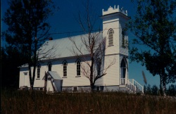
Third
Presbyterian Church in Black River (1930)
(Glendenning Collection)
A
clipping from the local paper, unnamed and undated, describes the new
building as follows:
“The new church is
completed and ready for opening. A fine and beautiful edifice it is
– a credit to any community. In these days when any kind of a
building may pass for a church, it can be truly said that the
structure in Black River reflects the ideal eclesiastical
architecture for a small house of worship. The church has evoked
nothing but praise from all who have seen it. Great appreciation is
expressed to all who worked to make it what it is – to the building
committee, to the carpenters in charge and others who have laboured
without stint.”
In late
1930, discussions were held with Presbyterian congregations in both
Kouchibouguac and Richibucto with a view to sharing the services of a
full-time minister. As a result, Knox Presbyterian Church,
Kouchibouguac and St. Paul’s became a two-point charge. In 1950,
Calvin Presbyterian Church began to share a minister with St. Paul's
and Knox – an arrangement that continues to this day.
CHURCH
ORGANIZATIONS
Women’s Missionary
Society
On June
11, 1926 a Presbyterian Women’s Missionary Society was formed with
six members; the following officers were installed:
President
– Mrs. John R. Godfrey
Vice
President – Mrs. J. A. Watling
Secretary
– Mrs. J. R. Cameron
Treasurer
– Mrs. Robt. MacDougall
At the
annual meeting held on June 6, 1927, the following highlights were
reported:
12
meetings were held
10
new members were added
Average
attendance was 11 members
Program
activities included recitations, readings, study from “The Burning
Bush”, and presentations by the Golden Hours Mission Band , and
Visitations
from “Mrs. Williamson, Presbyterian Presbyterial President and
several visitors from Chatham WMS and Bay due Vin auxiliary.”
The
women’s Missionary Society is still active today.
Women’s League
The
Women’s League, meeting on Friday evenings as remembered by the
writer, appeared to be a social and fund-raising body. As I recall
the Lleague held regular meetings, organized church suppers and
catered for church events.
Mission Band
The Mission band was
for the children of the church. A reference in 1926 used the name
Golden Hands Mission Band but at the church opening in 1930, it was
referred to s the Black River Mission Band.
Sunday School
The writer does not
recall Sunday school anywhere but at the home of james and Kate
Watling – in winter inside but in summer under the huge crab apple
tree in the back yard.
PYPS
A Presbyterian Young
People’s Society was formed in 1930 with Venetia (Glendenning)
Russell as the first President
In late
1930, discussions were held with Presbyterian congregations in both
Kouchibouguac and Richibucto with a view to sharing the services of a
full-time minister. As a result, Knox Presbyterian Church,
Kouchibouguac and St. Paul’s became a two-point charge. In 1950,
Calvin Presbyterian Church began to share a minister with St. Paul's
and Knox – an arrangement that continues to this day.
Summer Bible School
CEMETERY
The
writer is not unaware of the tension within the congregation at the
time, and within church families, with events surrounding Church
Union; some may still exist. Perhaps the outstanding issue is that
of the cemetery. Even today, road signs point to both the Black
River Cemetery and St. Stephens Cemetery yet they are one and the
same.
As
mentioned earlier, there was a burial ground beside the church in Bay
due Vin. As early as 1823, however, the first burial took place on
the present burial site in Black River. The original land on which
the church and cemetery are located, Lot Number 4, was granted to
Alexander Gunn on June 3, 1812. The area on which the church and
cemetery are located was known as Gunn’s Point; later ownership of
the land passed to Enoch Godfrey. In the history of St. Stephens,
Ernest MacLean reported the first burial in 1823 of Enoch’s
father-in-law, Robert MacBeath; the second burial, a year later, was
Duncan MacNaughton who was killed by a falling log. Perhaps this was
the origin of the “Black River Cemetery” to distinguish it from
the one in use in Bay due Vin. In any case, according to my
information, St. Stephen’s Presbyterian Church purchased the land
in 1836 at the time that the new church was erected in Black River.
The name, Church Point, which applies to the location at present,
probably arises from that time.
A
search of church records may throw more light on the issue of
cemetery name. Was it St. Stephens Cemetery? Or St. Stephens
Presbyterian Cemetery? Again in 1925, did the name remain as St.
Stephens Cemetery or was it formally changed to St. Stephens United
Church Cemetery. I leave it to others to sort out this issue. In
any case, in 1940, the congregation of St. Stephens United Church
passed a resolution granting Presbyterians the same rights and
privileges as to the use of the cemetery as they had before church
union and invited St. Paul’s congregation to name a member to the
Cemetery Committee. The Presbyterians accepted the offer and decided
that a separate Presbyterian cemetery was not needed.
MEMORIES
APPENDIX
A
Early Missionaries and the First Church*
The first settlers of
Black River and vicinity, both the Loyalist group and the immigrants
who came from Scotland at a later date, were almost wholly of the
Protestant faith, mostly Presbyterian, with a few Anglicans and
Methodists. There was, I believe, only one Roman Catholic family
among them, that of Major MacDonald. It is not surprising,
therefore, that these sturdy pioneers, once the difficulties of
settlement were surmounted, should turn their attention to the
problem of securing a measure of the benefits of a settled minister
among them. Owing, however, to the sparsely settled state of their
own and surrounding districts, this ambition was not realized until
many years later.
While there is no
definite proof of any settled minister prior to the coming of the
Rev. Simon Fraser in 1834, it is certain that there were occasional
visits from traveling missionaries for many years earlier. The fact
that a small church had been built at the mouth of the Bay du Vin
river proves this most conclusively.
It is probable that the
Rev. Dr. McGregor of Pictou, Nova Scotia, on some of his many
missionary journeys through this part of the province, may have
visited the Black River settlement. This venerated clergyman was a
native of Perthshire, Scotland, and had been sent out to Pictou in
response to a petition from the people there, by the Genera Associate
Synod of Scotland (then known as the Anti-Burgher Synod) in 1786.
Shortly after his coming to Pictou, he began a system of missionary
journeys to distant parts of the country. He was a gifted and
impressive preacher, and when reaching a settlement his custom was to
gather all the people together and spend days, and sometimes weeks,
in preaching, praying, and religious conversation. In this way he
traveled the eastern portions of New Brunswick, Prince Edward Island
and parts of Nova Scotia, and was the means of founding many of the
older congregations throughout this wide territory.
There was also the Rev.
Mr. Jones, who had taken up land at Bay du Vin, and resided there for
some time. It is not known with any certainty to what religious
denomination he belonged.
The church at Bay du
Vin already referred to, was build tin 1812. While nominally a
Presbyterian church, it is likely that it was intended as a place of
worship for all the Protestant people in the community. The fact
that it was built at Bay du Vin, and only a short distance from where
the Anglican church was built some years later, while the majority of
the Presbyterians lived in the Black River settlement, would lead one
to suppose this was the case.
*Pages 31-56 of
Black River and Its First Settlers by A. W.
MacDougall, 1935. Reprinted with permission of the family and
retyped by Don Glendenning.
For what meager
information I have been able to gather concerning it, I am indebted
to some of the older people whose memory went back to the days when
it was still standing. This was some years ago, and most of them
have since passed away. I have, however, definite information
concerning the building of the church. The original contract for the
work is still extant, and was, until recently, in the possession a
gentleman in Bay du Vin. The document bore the signature of the
contractor, a Mr. Gray of Chatham, and also the names of three men
representing the people. John B. Williston, Farquahar McRae and a Mr.
McLeod. Mr. Williston lived in Bay du Vin, Mr. McRae in Bay Side,
and Mr. McLeod in Black River.
The church was a small
building of frame construction, and was built close to the shore on
the westerly side of the south of Bay du Vin river, at a point since
known as “Ullock’s Point”, from the name of the man who owned
the surrounding land, and where a ferry connected with the other side
of the river. It was used for public worship as occasion required
until the building of the first church on the present site at Black
River, and then fell into disuse. The story has been told of a Negro
evangelist who once was holding services in the old church, and in
one of his sermons, while telling the story of the creation, made the
statement that “the Lord made the first man and woman out of clay,
and hung them on the fence to dry”. He was immediately interrupted
by another darkey in the audience, with the question, “if dat’s
de trufe, brudder, kin you tell me who built dat fence?” The
parson’s answer is not recorded.
In the course of time,
owing to the wearing away of the river banks where it stood, the old
building collapsed and disappeared.
A small plot of land
adjoining the church was used as a cemetery, and a considerable
number of people were interred there. It is now partly overgrown
with large trees. Only three or four of the graves are now marked
with headstones, the oldest bearing the name of Joseph Williston, who
died on October 16th. 1818. Part of the cemetery has also
been washed away.
In the year 1818 a
public meeting was held in Bay du Vin, with the view of co-operating
with Tabusintac and Burnt Church in securing the services of a
settled minister. I have the original minutes of the meeting in
handwriting of my great- grandfather, who, apparently, was the
secretary of the meeting, and of which the following is a copy:
Bay du Vin
August 16, 1818
“We, the subscribers, residents of Black
River, Bay du Vin, and Point aux Carr, having met this day, and taken
into serious consideration our destitute situation, by the want of a
more frequent dispensation of the ordinances of the Gospel amongst
us, and considering that our brethren of Burnt Church and Tabusintac
are in a similar position, we propose to unite with them in
endeavoring to support a Minister of the Gospel amongst us, of the
Presbyterians adhering to the Westminster Confession of Faith as
received by the Church of Scotland – and for this purpose we bind
and oblige ourselves to pay the various sums set opposite our names,
for the space of one year, into the hands of a committee chosen from
amongst us for the management of the business, and we consent and
agree to the following resolutions which we subscribe.
Given under our hands, day and date as above.
Resolution One – That the term of our
subscription shall commence from the day when our minister arrives,
and we engage to pay his stipend half-yearly in advance, and also
give him bed, boarding and washing in proportion to our
subscriptions.
Resolution Two – That our Minister shall
officiate one month at Bay du Vin, and we shall conduct him over to
Burnt Church where he shall stay one Sabbath, and then go down to
Tabusintac, where he shall continue for another month, or according
to the amount of their subscriptions, and thus they shall send him
back to us, and so on alternatively during the space of one year.
Resolution Three – Besides preaching every
Sabbath, our Minister must visit and examine every family at least
twice a year or as often as he can overtake.
Resolution Four – in order to carry our
desire and resolution into effect we agree in requesting the Rev.
James Thompson to use is influence with the Presbytery of Pictou, and
the Synod in Scotland, in order to obtain a Minister for us as soon
as possible.
Resolution Five – That if possible a Minister
be obtained for us who can preach the Gaelic as well as the English,
as there are several amongst us who do not understand the English.”
No subscription list was attached to
the foregoing, and it is unlikely that any further move was made to
secure the services of a settled minister until the Rev. Simon Fraser
came in 1834.
There could not have been any organized
Presbyterial in Miramichi at that time, and any correspondence with
the Church in the Old Country would probably have to be carried on
through the Presbytery of Pictou. The Rev. Mr. Thompson mentioned
was likely the resident minister at Chatham or Newcastle.
Organization of the
St. Stephen’s
Congregation and the
Building
Of the First Church
The coming of the Rev. Simon Fraser to
Black River marked the first step in the organization of the
community as a regular congregation of the Presbyterian faith in
connection with the Church of Scotland. Early in 1834 a public
meeting had been called, and it was decided to send to Scotland for a
minister who was to give his time equally between Black River and
Tabusintac. A subscription was opened and a considerable amount
subscribed for a five-year term, which I have copied in full as it
appears in the old church records:
“Being urged by the consideration
that solemn duties of Public Worship ought to be done unto God, we,
the inhabitants of the Parish of Glenelg, hereby engage to pay the
sums set opposite our names, yearly, for a period of five years, to a
clergyman of the Church of Scotland, as by law established, for a
certain portion of his services, the time to be regulated by the Rev.
James Souter, minister of Newcastle, and the Rev. William Johnstone,
minister of Chatham, Miramichi, in such a manner as may best promote
the religious interests of this and neighbouring destitute
settlements:
£ s
Donald McDonald – Bay du Vin 1
Donald McGraw – Black River 1
A friend of the Church of Scotland 10
John MacEacheran 1
Thomas Murray 15
John McLean, Sr. 1 10
Ewan Cameron 2
Archibald Cameron, Sr. 2
Archibald Cameron, Jr. 2
Neil McGraw 1 10
Hugh McKinnon 1
Alexander MacDonald 2
Jane Macdougall 1
Kenneth MacDonald 1
Duncan McGraw 1 10
John Anderson 1
Farquhar McGraw 1
Angus Sinclair 2 10
John Sinclair 1
Allan Cameron 1 10
Alex. MacDonald, Jr. 1 10
Roderick McDonald 1
Alex. McDonald, Sr. 1
Amelia Swain 5
Hugh MacDonald 15
Enoch Godfrey 2
John McLean 10
Robert MacLean 10
John McLean, Sr. 10
Donald McRae 1
Peter Kelly 1
William Gray 1
George England 1
George Gardiner 10
Robert Gardiner 10
Robert Mays 15
David McDonald 15
Alexander McRae 15
Amelia MacRae 1
James Cameron 1
Alexander Cameron 1
Donald Cameron, Jr. 1
Ronald MacDonald 10
William MacDonald 10
Joseph Tranter 10
Donald Ross, Sr. 10
Donald McColl 1
John Ross 1
Dougald Cameron 5
John Cameron 5
Alexander Campbell 1
Donald Cameron 1
Robert Weeds 1
William Munroe 1
Peter MacDougall 1 10
Alexander McBeath 5
William McBeath 3
Donald McNaughton 2
Alexander McNaughton 2
Malcolm McNaughton 1 10
Marjorie McNaughton 10
John McLean 1
Donald McLean 1
Elijah Parsons 1
Benjamin McKinnon 1
John Wilson 1
Simon McDonald 10
George Foster 1
Robert Alton 10
Thomas Jones 1
“The above is a true and correct copy of the bonds entered
into by the inhabitants whose names are above written, as
transcribed from the original document, and as certified in name and
on behalf of the Committee of Black River Church, Glenelg, by me.”
(Signed) ALEXANDER MCBEATH
A copy of
the foregoing, with a request for a minister was sent to the North
American Colonial Society in Glasgow. In response to the request,
the Rev. Simon Fraser was appointed to the field, and soon after
reached the scene of his labors.
A meeting of the inhabitants of Black
River District (by previous public notice) was held at the residence
of Mr. Archibald Cameron, Sr., on the tenth day of November, 1834,
and the following persons were unanimously appointed to use all due
efforts for the erection of a church on Alexander Gunn’s point,
being part of Lot 4, to be in full connection with the church as by
Law established in Scotland:
Committee:
Alexander McBeath, Chairman
Angus Sinclair, Secretary
Alexander MacDonald
Hugh (Ewen) Cameron
Alexander Cameron
Peter MacDougall
Enoch Godfrey
The proposed site for the church,
which has long been known as Church Point, is a peninsula several
acres in extent, jutting out from the mainland on the south side of
Black River about three miles from its mouth, and connected to the
shore by a narrow neck of land. It has dry sandy soil, and at that
time was partly covered with a heavy growth of timber. It is an
ideal location for a church, probably without parallel in the whole
Province. A portion of it had previously been used as a burial
ground, and there it was decided to build the church. That the
committee lost not time in starting is shown by the following taken
from the old records:
Glenelg Parish
“Whereas the inhabitants residing in the Black River, Bay du
Vin, and other districts of the Parish of Glenelg (at that time the
present parish of Hardwicke was included within the bounds of
Glenelg), County of Northumberland, and Province of New Brunswick,
have for a long time been destitute of a place of Public Worship,
and of a stated ministry, and whereas they have now secured a pastor
belonging to the National Church of Scotland, and are about to erect
in the said Parish, on Lot No. 4, on the south side of Black River,
a church of the Established Church of Scotland, to be at all times
in full connection with the Church of Scotland, as by law
established.
And whereas the inhabitants of said Parish are unable without
assistance to erect a suitable building for that purpose, we, whose
names are hereunto subscribed, bind and oblige ourselves to pay to
Alexander McBeath, the treasurer appointed for said church, or his
order, on or before the first day of November, one thousand, eight
hundred and thirty-five, the sums attached to our respective names,
in Halifax currency.”
Then followed a long list of names
with amounts varying from one pound to twenty, in all a very
substantial amount. Tenders were then called for to furnish the
lumber for and raise the frame of the building, and a tender from
Duncan McGraw and Alexander MacDougall was accepted. Following is
the agreement that was made with them:
“Memorandum of agreement, entered
into tie 15th day of December in the year
of our Lord, 1834, between the committee appointed for the erection
of a church in Black River, Parish of Glenelg, of the one part, and
Duncan McGraw and Alexander Macdougall of the other part
Witnesseth…….
That the said Duncan McGraw and Alexander Macdougall hereby
agree to erect a good and sufficient frame of a church, agreeably to
a plan of said church to be of good sound pin, juniper and spruce,
to be hewed square and free from all defects, and the said Duncan
McGraw and Alexander Macdougall do hereby bind themselves in the sum
of fifty pounds of lawful money of Halifax currency, that the work
aforesaid shall be fully completed on or before the first day of
June next ensuing the date hereof.
The committee hereby agrees to pay the said Duncan McGraw and
Alexander Macdougall the sum of thirty-one pounds, twelve shillings,
of Halifax currency, for the performance of THE work aforesaid, and
it is understood and hereby further agreed between the parties that
no part of the sum above mentioned is to be paid by the said
committee until the fourteenth day of July next, after the work
mentioned in this agreement will be completed to the satisfaction of
said committee, and it is further understood between the parties
that the said church is to be erected on the burial ground, Lot No.
4, on the south side of Black River, Parish of Glenelg. In witness
whereof the parties have hereunto set their hands and seals on the
day and year hereinbefore written”
(Signed and sealed by)
DUNCAN MCGRAW
ALEXANDER MACDOUGALL
ANGUS SINCLAIR
Witness: PETER KELLY
The lumber was procured and the frame
made ready to erect during the following Winter and Spring. In the
meantime, a call for tenders was inserted in the “Miramichi
Gleaner” for the finishing of the work, and on the 21st
day of April, 1935, the contract was awarded to William Porteous of
Chatham, for the sum of two hundred and fifty pounds, nineteen
shillings.
In addition to this, Mr. Porteous was
paid about one hundred pounds extra for finishing the gallery,
building the porch, and some other work not included in the first
contract.
The plans called for a building
forty-five feet long by thirty in width, with an eighteen-foot wall.
The entrance was on the southern side, through a porch, from which
a stairway led to a vestry above, and also to the gallery which
extended around three sides of the building. Against the northern
wall, facing the doorway, was a pulpit, and in front and lower down
was the “Precentor’s Box”, or seat for the leader of the
singing in the church services. Provision was also made for a
session room, to be built on the back of the church, and to be
reached by a door in the recess beneath the pulpit, but this, for
some reason, was never done.
The pews were the box-in variety in
vogue at the time. Those in the four corners on the ground floor,
and on either side of the entrance were large square ones, with a
capacity of about ten sittings, having seats on all four sides, and
a small table in the center. In the center of the floor were
several long pews with tables running the whole length and seats on
either side. This was where those who led the singing usually sat.
The remainder of the ground floor and gallery was taken up with
smaller seats for four or five persons.
The lumber used in the construction of
the church was of a quality seldom if ever seen in the present day,
and the workmanship was equally good. Every detail was executed
with the most painstaking care, especially in the finishing of the
interior. In all it was a possession of which the congregation
could justly be proud, and with the completion of the building they
made preparations to have the pews allotted to the various families,
and to dedicate the church to the Public worship of God.
“Black River Church,
2oth February, 1836
Agreeable to a public notice of the
16th, a general meeting was holden, when
the church accounts were brought forward and examined. Also
unanimously agreed that the pews would be sold on the first Monday
of April following, and every person who buys a pew will get credit
for what money he has paid towards the church before that date.”
(Signed)
ALEXANDER
MCBEATH
ANGIS SINCLAIR
ALEXANDER CAMERON
According to the above agreement, the
following notice was inserted in the Miramichi Gleaner:
NOTICE
The preference of the
pews of the
Black River Church will
be sold on
Monday, the fourth day
of April
Next. Sale to commence
at ten o’clock
ANGUS SINCLALIR
Secretary
March 15th, 1836
At a meeting held at the home of
Archibald Cameron, Sr., on the 28th of March, the
following rules were agreed to for the sale and regulation of the
pews:
First – the pews may be sold at
public auction, of by private sale, as the committee may think
proper.
Second – the purchase money to be
paid by installments. The first instalment to be paid on or before
the first day of May next, the second on or before the first day of
November, the third on or before the first day of may, 1837, and the
fourth or final one on or before the first of November, 1837
Third – a yearly rent in addition to
the purchase price is to be paid into the hands of the treasurer, in
two half-yearly payments, one-half on or before the first of august,
the other half on or before the first of January, in each and every
year.
Fourth – the pews to be liable to
the yearly rent as set forth in the sale book, during Mr. Fraser’s
term, as agreed to with him. After his term, the pews to be taxed
as the committee sees fit.
Fifth – a deed of each pew will be
given to the purchaser on the last instalment of his purchase money
being paid, consisting an extract of the purchase from the sale book
and signed by the chairman of the Corporation.
Sixth – if any pewholder fall twelve
months in arrears in the rent of his pew, the committee may adopt
legal means to recover it, or he shall forfeit his pew, as the
committee thinks fit.
Seventh – Any person hereafter
wishing to dispose of his pew shall first make offer of it to the
trustees in writing, and they shall be bound to give him an answer
in writing within six weeks of the said offer, and if they decline
purchasing it, the proprietor shall be at liberty to dispose of it
to another, subject to the yearly rent attached to it in the sale
book.
Eighth – purchasers of pews to sign
the sale book, which binds equal with their note.
Ninth – any individual purchasing a
pew will get credit for what money he advances toward the building
of the church, in the last instalment.
Tenth – should the committee give
the person so disposed for the selling of his pew, the original sum
paid for it, he can desire no more.
The above ten rules being publicly
read and unanimously approved of, the pews were sold.
Thinking they might be of interest, I
have copied the list of pewholders as they appear in the old
records:
No
of No. of Purchase Yearly
Pew Sittings Price Rent
£ s. d. P
s. d Name
of Purchaser
1
5 10 10 1 12 6 ----------
2
5 10 8 1 12 6 ----------
3
4 8 5 1 6 Alex Fraser, Junior
4 10 31
10 3 5 Alexander MacDonald
5
5 10 8 1 12 Thomas Murray
6
8 20 2 12 Donald MacNaughton
7
5 10 7 6 1 12 6 Hugh MacKinnon
8
5 10 10 1 12 6 Robert MacDonald
9
4 8 10 1 6 Alexander Campbell
10 10 21
10 3 5 Archibald Cameron, Sr.
11 10 21
10 3 5 Peter MacDougall
12 10 20
10 3 5 Enoch Godfrey
13 10 21
10 3 5 Robert MacLean
14 10 22 3
5 Alexander McGraw
10 23
10 3 5 Alexander McRae
16
4 10 5 1 6 David McDonald
17
5 11 1 6 Benjamin Gunn
18
5 10 10 1 12 6 Mary Cameron
19
8 17 5 2 12 Ewen Cameron
20
5 10 15 1 12 6 John McDonald
21 10 29 3
5 Malcolm McNaughton
22
4 9 16 1 6 Donald Ross
23
4 10 18 1 8 6 Angus Sinclair
24
5 Angus Sinclair
5 Alex.
McDonald, Point aux Carr
26
4 James Witheral
27
4 ------------
28
4 William McBeath, Senior.
29
4 William McBeath, Senior
30
5 Roderick McKenzie
31
5 Roderick McKenzie
32
5 Allan Cameron
33
3 John A. Ross
34
3 John Anderson
35
3 Francis Russell
36
1 Alex. McDonald, Point aux Carr
GALLERY
37
5 John Cameron, Branch
38
5 Roderick Robinson
39
5 William Godfrey
40
5 Robert Weeds
41
- ---------------
42
- ---------------
43
- ---------------
44
7 Francis McKnight
45
6 Samuel McKnight
46
6 John McKay
47
- ---------------
48
- ---------------
49
- ---------------
50
- ---------------
51
5 Alexander McLean
52
5 John Cameron
53
- John McLean
-
Previous to the church being incorporated, the following notice was
read from the pulpit:
“I hereby intimate that a meeting
of the pew holders of this church will take place within the church,
on Wednesday, the first day of June at twelve o’clock, noon, for
the purpose of Incorporating the Church and electing trustees
according to the General Act of Incorporation for the Church of
Scotland in the Province of New Brunswick.
(Signed) SIMON FRASER
Glenelg, May 29, 1836 Moderator”
Agreeable to the
above notice the pew holders met for the purpose above specified,
and it was moved by Mr. Angus Sinclair. Seconded by Mr. Donald
McNaughton, and unanimously agreed to, that Mr. Alexander McBeath
take the chair.
“The chairman having stated the
object of the meeting, and no objection being offered, it was moved
by Mr. Donald McNaughton, and seconded by Mr. Thomas Murray, and
unanimously agreed to, that this church be incorporated according to
the General Act of Incorporation for the Church of Scotland in the
Province of New Brunswick.
Moved by Donald McNaughton, and
seconded by Mr. Alexander Campbell, and carried unanimously, that
Messrs. Angus Sinclair, Alexander McDonald, Peter MacDougall, Enoch
Godfrey, Ewan Cameron, Alexander
McBeath, and Alexander Cameron be trustees for the current year
according to the Act above referred to.
Moved by Angus Sinclair and
seconded by Alexander McDonald and agreed to that Alexander McBeath
be chairman for the present year.
Moved by Angus Sinclair and
seconded by Alexander Mcdonald, and agreed to, that Alexander
McBeath be treasurer also for the present year.
Moved by Angus Sinclair and
seconded by Alexander McDonald that Peter Kelly be clerk”
Black River Church
1st
June, 1836”
(Signed) SIMON
FRASER
Minister,
(Interim Clerk)
The church now
being fully completed, on the 20th day of November, 1836,
was formally opened, and solemnly set apart for the worship of god.
The Rev. Mr. Fraser preached from Psalm 137, verses 5 and 6. In the
course of his address he spoke of the claims the Church of Scotland
had upon the affections and support of Presbyterians everywhere,
especially those of Scottish descent. On this occasion it was also
decided to name the church, and, as it was customary to take the
name of some saint, the name given to that of Black River Church was
St. Stephen’s”.
Election
of the First Elders of St.
Stephens
Church and the First
Communion
Service
For some time the
Rev. Mr. Fraser laboured in the congregation without the aid of any
elders to assist him in the spiritual oversight of the field. At
length, however, it was agreed that a session should be organized.
Accordingly the following persons were duly elected to the office of
eldership, viz: William McBeath, Francis McKnight, Donald
McNaughton, and Angus Sinclair.
A meeting of
Miramichi Presbytery was held in St. Stephen’s Church on November
12rh, 1837, for the purpose of ordaining the elders elect. Members
of the Presbytery present were: the Rev. Mr. Archibald, Moderator;
the Rev. James Souther; the Rev. Mr. Simon Fraser, Ministers; and
Mr. Roderick McLeod, Elder. After an impressive discourse by the
Moderator, the Rev. Mr. Fraser proposed to the newly elected elders
the constitutional question required by the laws of the church in
such cases, and proceeded to set them apart by prayer to the office
of Eldership, and, after having delivered a suitable address to them
and the congregation upon their respective duties, they received
from them and the other members of Presbytery present, the right
hand of fellowship.
The first meeting
of the newly appointed session was held on the 7th of
December following. I have copied the minutes as they appear in the
records:
“St. Stephen’s
Church, Glenelg
7th
December, 1837
The which day the Session met for
exhortation and prayer, others of the congregation uniting with them
in the exercise of prayer. The members of this ecclesiastical body,
Resolve in strength of Grace to discourage delinquency and vice, and
to afford every protection to all whole love our Lord Jesus Christ
in sincerity. They well know that its duties may often lead to
unpleasantness, but whilst they are on the side of God’s
controversy with unbelief and its wicked fruits, that the approval
of Jehovah is assured, and the support of the good in Christ is
beyond question. They resolve, on their own part, a conversation
becoming the Gospel, and to dispense to the best of their ability
that salutary discipline that is ordained of God, for the reproof,
correction and instruction in righteousness of the members of his
mystical body. Their prayer will, as it ought, be that they may be
delivered from the fear of man, which bringeth a snare, so that
fidelity to God and to immortal souls will be evidenced as the
primary principle of their guidance. As a standard of conduct in
their calling, the Session desires before God to inscribe on their
Sessional Minutes, the Formulus of their Church, a Church with which
Christ is all in all, and endeared to her people by being watered
with the blood of her saints.
Closed with
praise and prayer
(Signed) SIMON FRASER Moderator”
A noteworthy event
in the early history of the congregation was the first Communion
service. This was held on the first Sabbath of March, 1938. The
Session decided:
“that Thursday, the first of
March, be solemnly set apart as a day of fasting, humiliation and
prayer, that Friday be set apart for meeting with intended
communicants, and for self-examination and prayer, that Saturday be
kept as a day of preparation, and the Monday immediately following
the solemn communion be strictly kept as a day of Thanksgiving, and
that this Congregation be affectionately admonished to observe and
dedicate these days as holy unto the Lord.”
On these days the
people gathered at the church from all parts of the community, some,
from names which appear on the list of communicants, coming from as
far as Escuminac. Public worship was engaged in during the most of
each day, and on Saturday the names of intending communicants were
read to the session: “that the same might be purged, if
anything was known in the life, doctrine, walk, of conduct, of the
individuals desiring admission to so holy and ordinance.”
Tokens (which are still in use in the congregation) were then
distributed to the intending communicants.
The silver
communion service which was used that day for the first time was the
gift of Rev. Mr. Fraser to the church. It is still a treasured
possession of the congregation, but has been superseded by the
individual communion sets for some years.
Following is the
roll of the first communion: -
William McBeath (Elder)
Francis McKnight (Elder)
Donald McNaughton (Elder)
Angus Sinclair (Elder)
Mrs. Widow Carr
Wm. McKnight
Mrs. William McKnight
Mrs. Francis McKnight
Donald McColl
Thomas Jones
Mrs. Widow Neil McGraw
Mrs. J. Tranter
Alex. McDonald, L.B
Mrs. Angus Sinclair
Mrs. Farquahar McRae, Widow
James McKnight
Mrs. James McKnight
Mrs. Robert Weeds
Mrs. Donald McNaughton
Mrs. Widow John Cameron
Mrs. John Cameron
Mrs. Widow Ross
Archibald Cameron, Sr.
Mrs. A. Cameron
Joseph Tranter
Widow Mcdougall
Mrs. A. McDonald
Mrs. Ewen Cameron
Simon MacDonald
At that period the
Communion was only dispensed once a year, and in March, 1839, we
find the names Boiney McRae, Annabella MacDonald, Isabella McDonald,
Mrs. Peter Kelly and John Crichton, added to the roll.
The third and last
communion celebration under the pastorate of Rev. Mr. Fraser took
place in April, 1840, shortly before he departed from the
congregation.
MR.
FRASER’S GOWN
Early in 1836 a
movement was started by the ladies of the congregation to present
the Rev. Mr. Fraser with a pulpit gown. For the purpose a
subscription list was opened, and the congregation as divided into
districts to be canvassed by the ladies themselves. Recently I
found a portion of the old list, which I give herewith:
“Following
the example of the ladies of Miramichi and Tabusintac towards their
pastors, the ladies of Bay du Vin and Black river intend to present
their pastor, the Rev. Simon Fraser, with a Pulpit Gown. The
undersigned subscription if for that purpose, to be paid into the
hands of the collectors in each district, on or before the 12th
day of May next.
Given under our
hands this 22nd day of March, in the year
of Our Lord one thousand, eight hundred and thirty six:
Mary Sinclair, Sr. 10s
Grace MacDonald 10s
Mary McGraw 10s
Christina Weeds 10s
Elizabeth McBeath 10s
Isabella McBeath 10s
Christina McBeath 10s
Euphemia McBeath 10s
Margaret McNaughton 10s
Mrs. Alex. McNaughton 5s
Margery McKay 10s
Barbara McNaughton 10s
Jane Munro 5s
Margery Cameron 5s
Mrs. John Cameron, Jr. 5s
Mrs. Kerr, Sr. 5s
Mrs. Kerr, Jr. 5s
Eliza Cameron 5s
Margaret MacDonald 5s
Catherine McDonald 5s
Margaret Ross, Sr. 10s
Ann Ross --
Catherine Ross 5s
Mary Cameron, Jr. --
Christina Cameron 5s
Mary Cameron, Sr. 10s
Jane Macdougall 10s
Christina McColl 5s
Eliza Godfrey 10s
Margaret Jones --
Alice McLean 5s
Grace McLean 5s
Isabella McLean 5s
Judith Coope 5s
Isabella McDonald 5s
Annabella McDonald 5s
Margaret McDonald 5s
Jane Kelly 5s
Christina Sinclair 10s
Mary Sinclair 5s
Jane Fowlie 5s
Sarah McDonald 5s
Margaret Murray 5s
Catherine Cameron 5s
Catherine Anderson 5s
Mrs. Gregor McKinnon 5s
Mrs. Hugh McKinnon 5s
Boiney McRae 5s
Mrs. Alexander McDonald collected from
Allen Cameron’s to Donald McColl’s on the north side of Black
River, and on the south side to John Anderson’s. Mrs. Angus
Sinclair collected from John Anderson’s along the south side to Bay
du Vin and Escuminac.
On the occasion of Mr. Fraser’s
farewell sermon, preached on the 12th of April, 1840, just before
his departure for Scotland, he called the session together at the
close of the service for a farewell meeting. After transacting such
business as was brought before the meeting, he spoke of his intending
departure, and then in his own words; “cast each in prayer upon
the Divine care, thanking God for every kindness vouchsafed, and that
He should let His work appear unto His servants, and His glory unto
their children. That He would cause His beauty to be upon us, and
that He would establish the work of His hand upon us, yea, the Work
of His hands that He would establish it. Bade each other an
affectionate and Christian farewell. Closed with Prayer.
(Signed) SIMON FRASER, Moderator”
After Mr. Fraser’s departure the
Session kept no minutes at all, except a short notice of a meeting at
the home of Mr. Archibald Cameron, Senr., of which the Rev. Angus
McMasters was Moderator, on Sept. 2nd, 1844, for the
purpose of appointing a representative to the meeting of Synod to be
held in Chatham on Sept. 5th. Francis McKnight was the
delegate appointed. Also a meeting held in the church on the 11th
of July, 1848, of which the Rev. John Turnbull was Moderator, pro
tem, for the purpose of considering a remit of Presbytery, concerning
the incorporation of the Presbytery of New Brunswick with the Synod
of Nova Scotia.
From then until a fairly recent time no
records have been kept, or at any rate were not copied into the
minute book, and so have been lost.
St. Stephen’s –
Financial Difficulties of the Early Days
In the days immediately following the
erection of the church, the congregation seems to have been heavily
burdened with debt. While the Minister’s stipend seems to have
been paid regularly during Rev. Mr. Fraser’s incumbency, there was
still a large sum owing for the erection of the church. Considerable
money had been subscribed, but much of this had not been paid, also a
great deal of what was to have been paid for the pews was never
actually collected, and there are instances in the minutes of the
earlier annual business meetings, where the trustees were instructed
to adopt legal means, if necessary, to collect the arrears of pew
rent. The total cost of the church building, including extras which
were not in Mr. Porteous’ original contract, and what was paid to
Messrs. McGraw and Mcdougall for the frame and other lumber supplied,
amounted to slightly over four hundred pounds. We find that in
November, 1837, there was still owing to Mr. Porteous the sum of two
hundred and sixty-eight pounds. To pay the debt, the trustees
decided, at a meeting held in Chatham on Nov. 20th of that
year, to borrow sufficient money to pay the debt, from Joseph Cunard
& Co., giving as security a note payable in two years from that
date.
It is evident that this note was not
fully paid off at the appointed time, or, for a long period
afterwards, for we find in a minute of a meeting of the trustees held
on March 18th, 1844, that there was still owing on the
loan from the Cunard Co. the sum of fifty-six pounds, and also owing
to the Bank at Newcastle the sum of thirty pounds, the latter being
secured by the personal note of two members of the trustee board.
The Rev. Angus McMasters came to serve
the joint congregations of Black river and Kouchibouguac in June,
1842. The people engaged to pay him a stipend of one hundred and
thirty pounds a year, Kouchibouguac to contribute one-third. This
was to be paid in half-yearly instalments in June and December. Up
to the end of Mr. McMasters’ pastorate in June, 1845, only one
hundred and five pounds had been paid to him, eighty-one pounds by
Black River and the Balance by Kouchibouguac. In order to pay him
the balance of two hundred and eighty-five pounds still owing, it
became necessary to borrow the money. (The difficulty in raising the
minister’s salary likely arose from the fact that when the
disruption occurred in Scotland in 1843, Mr. McMasters threw in his
lot with the Free Church party, while a large majority of the
congregation took the side of the Establishment.)
The borrowing of this money gave rise,
some years later, to an incident which is probably without parallel
in the history of any church in the Province, and which it may be
worthwhile to note in passing. It appears that the trustees, owing
to the fact that they were scattered over a wide stretch of the
country, and consequently had much difficulty in attending the
numerous meetings that were necessary, had deputed three of their
members to transact the business of the Board, and when it became
necessary to raise the money for Mr. McMasters, these men had to give
their note for the money. When the note became due, only one of the
men was in a position to pays, and he had to foot the entire bill
himself.
For a number of years following,
several meetings of the trustees were called for the purpose of
arranging to repay this gentleman but nothing was achieved. The
unsettled state of the congregation following the disruption in
Scotland, may have had something to do with it, as the great majority
of the trustees were adherents of the Established Church, while the
gentleman in question was for the Free Church.
Finally, in the Spring of 1863, a
special meeting was called for the purpose of settling the vexing
question once and for all. The creditor, who was then residing in
Kent County, at a distance of about forty miles, was requested to be
present at the meeting, and he complied. The meeting ended, as had
al previous ones, in failure to accomplish anything, one person
present who was opposed to payment making the statement “that it
was an unjust debt, it ever existed at all”.
Mr. C_____________, whose patience was
by this time exhausted, at once proceeded to Newcastle and had the
Sheriff seize the church building and grounds, together with a tract
of woodland comprising about four hundred acres, known as the “Glebe
lot”, and situated on the Little Branch of Black River, which
belonged to the congregation, and advertise the same for sale.
The sale took place in May, 1863. Many
of the congregation took the view that the sale was illegal, and
consequently no bids were offered against the creditor, to whom the
church and lands were sold for one dollar, and a deed of the property
was given to him by the Sheriff, James Mitchell, bearing the date of
May 16, 1863. The people were never molested in the use of the
church by the new owner, but the woodland which in former years had
brought some revenue to the church from the sale of lumber, was now
lost to them.
For many years several of the older
members of the congregation would never admit that Mr. C
_____________had any right to the property. One party went so far as
to seek legal advice from the late Hon. John M. Johnston, Chatham.
He was told by Mr. Johnston, that Mr. C ___________ had the best
title to the property that could possibly be given, namely, a
Sheriff’s Deed.
As the years passed, all differences
were gradually smoothed over, and the congregation entered upon an
era of prosperity that enabled them after some time to become
self-supporting.
A comparison of a congregational report
taken at random from among those of the last twenty ears, with the
total amount raised during the three years of Mr. McMasters’
incumbency, 1842-45, shows for the former, total receipts from all
sources of about $4500.00. and for the latter, slightly more than
£100
ST. STEPHEN’S
CHURCH
Effects of the
Disruption in Scotland on the Local Church
Looking back through the years, it is
hard for us to understand how events that occurred in distant
Scotland should affect the life of a backwoods congregation, such as
Black River was at that time. Perhaps the fact that most of the
people were but one generation removed from their compatriots in the
old land, as well as that many of the older people were still living,
and those held tenaciously to the doctrines and religious convictions
which they learned in the land of their birth. Be it as it may, the
differences of opinion held on the various questions involved, were
the cause of much bitterness and ill-feeling among the people, and at
least on one occasion was the cause of almost open violence.
The different Presbyterian
denominations that existed here and elsewhere in this country, had
their origin in Scotland, and were all imported by our Scottish
forefathers. They were brought into being by the relation which
existed between the Church and the State in Scotland, and the abuse
of that relationship, by the State’s interference in the discharge
of her spiritual functions.
The first trouble began in 1733, when
the Rev. Ebenezer Erskine and others protested against interference
by the State, and they were expelled from the Church of Scotland for
refusing to submit to civil authorities, in matters that were purely
spiritual. These me n formed what was known as the “Associate
Church of Scotland.” Again, in 1747, this church was the
“Associate” and “General Associate”. The cause of this
division was an oath that was required of burghers or men living in
incorporated towns. Some of the Ministers of the Associate Church
claimed that taking this oath was a civil matter, and that their
conscience would not allow them to subscribe to it. Others could see
nothing offensive in taking the oath. The consequence was a division
of the Secession Church of 1733, and the two parties came to be known
as the “Burghers” and “Anti-burghers”. The Burghers were
willing to take the burgher oath, while the Anti-burghers refused to
do so.
Then again in 1843 came another rift in
the Established Church of Scotland, also caused by the State’s
interference in church affairs. At this time four hundred and
seventy-four ministers, as well as many elders gave up their
positions in the Established Church, and constituted themselves into
the “Free Church of Scotland”.
Thus it will be seen that there were
four different Presbyterian churches in Scotland, and members of all
four came to this country in the early part of the last century. The
strife and bitterness that accompanied the divisions in the old land
were introduced to this country as well, and for this there was
absolutely no justification. There was no disagreement whatever
between the Seceders and the Church of Scotland in matters of
doctrine and church government, and outside Scotland there could be
no State Church, no patronage or interference by the state in church
affairs.
For many years the inherited prejudices
and unwillingness to recognize these facts prevailed among our
forefathers, and kept the different groups apart for the better part
of the century. But at length, intercourse began to take place
between our colonial churches in Canada.
The disruption occurred in Scotland
during the first year of Rev. Angus McMasters’ pastorate in Black
River. He adhered to the Free Church, while the great majority of
his congregation declared for the establishment. He continued to
minister, however, until 1845, when he severed his connection with
the congregation and removed to New Mills, N.B.
For a number of years following Mr.
McMasters’ departure there seems to have been nothing more than the
occasional service. When a Free Church minister came to the
settlement, services were usually held at the home of Archibald
Cameron, Sr., as the Establish faction would not allow to them the
use of the church building. To insure that they would not gain
entrance, a set of heavy iron bars and padlocks were placed on the
church doors, and on at least one Sabbath, when a Free Church
minister was in the district, and it was expected that an attempt
would be made to gain entrance to the church, a number of men with
firearms were placed on guard. An entrance was effected in spite of
them, however, and from that time forward no attempt was ever made to
close the church to the Free church clergymen.
I have not been able to ascertain the
exact time when this occurred, but it is believed to have been
sometime between 1849 and 1854.
Friction among the two parties
continued for some years longer, however, for we find in the minutes
of the annual meeting, held on June 5th 1861 “a protest
was entered against certain other parties supposed to be sympathetic
with the Free church, who proceeded in a disorderly and illegal
manner to elect trustees, and that such election be declared null and
void. The accompanying document contains the protest with the
signatures of the protestors appended.”
There followed the formal protest with
the names of practically all the Established Church sympathizers
along with the communicants and pew-holders of the congregation, some
twenty-five in number.
From this time forward antagonism seems
to have died out. It will be noted in perusing the old records that
name so men who had been among the office-holders in the first years
of the life of the conversation, and afterwards had been conspicuous
by their absence, were again taking places in the board of management
and other offices.
Ministers of St.
Stephen’s Church from 1834 to the Present Time
Rev. Simon Fraser 1834-1840
Rev.
Angus McMasters 1842-1845
Rev.
John Turnbull 1848-
Rev.
Demster Wallace ---------
Rev.
Stevenson 1854-
Rev.
Forbes ---------
Rev.
James Fowler 1857-
Rev.
Robert Faulkner 1860-1863
Rev.
Frederick Holme -----------
Rev.
A Glendenning ---------
Rev.
Samuel Russell 1873-1876
Rev.
William Fogo 1876-1877
Rev.
John Robertson 1877-1904
Rev.
A. J. W. Myers 1905-1909
Rev.
George Grant 1910-1916
Rev.
J. M. Fraser 1917-1919
Rev.
Dr. Thomas Harrison 1919-1926
Rev.
Kames F. McCurdy 1926-1928
Rev.
John C. Mortimer 1928-1933
Rev.
J. I Morrison 1933-
The Rev. Simon Fraser, A. M. first
minister of St. Stephen’s church was a native of Inverness, and a
graduate of King’s college, Aberdeen. He was sent out by the
“Glasgow North America Colonial society” arriving in Black river
in 1834. He also preached in Tabusintac, dividing his time equally
between the two fields. His coming had been anxiously awaited by
the people of the congregation, for he was the first minister whom
they could look upon as their own. He was a tall, imposing looking
man, and an eloquent preacher, who spoke his mind on all occasions,
from the pulpit or otherwise, regardless of the opinions of others.
In addition to the amount subscribed
by the people, the sum of fifty pounds was paid towards Mr. Fraser’s
salary by the Glasgow Colonial Society, (This grant was also paid
to all the early ministers.)
During Mr. Fraser’s pastorate the
church was build at Black River, the session organized, and the
congregation generally consolidated. At that time the field
included, besides the immediate settlements of Black River, Napan,
and Point aux Carr, those of Bay du Vin, Escuminac, and
Kouchibouguac.
The people had agreed to pay the
minister’s stipend for a period of five years from 1834, but in
1838, fearing that Mr. Fraser accept a call which had been given to
him by the people of Tabusintac. gave him a “call for life”. He
accepted, but greatly to the regret of his people he resigned two
years later. His farewell sermon was preached to the people of
Tabusintac on March 8th, 1840, and in St. David’s
Church, Alnwick (Burnt Church), on March 15th. His last
sermon in Black river was on April 12th of that year.
The regard in which he was held by his
congregation is shown in the words of an address read to him after
his farewell sermon: “Be assured, Rev. and beloved Sir, that you
will ever be remembered by us, with feelings of the most
affectionate regard. Though you may be separated from us, neither
distance or time or place shall ever efface you from our memories.
May the Great Head of the Church, whose servant you are, grant you a
happy meeting with your friends, bless and prosper your labours in
whatever part of his Vineyard you may be called to exercise your
talents, and on the great day when the Lord of the Vineyard shall
come to receive an account of your Stewartship, may you have many
also from amongst us to be presented also along you in the presence
of God, with exceeding great and mutual joy to each other.”
Mr. Fraser returned to Scotland in
1840.
For two years following Mr. Fraser’s
departure Black river received occasional supply from the ministers
of Chatham and Newcastle.
The next settled minister was the Rev.
Angus McMasters. He was a native of Arran, Scotland, and came to
Black River in June, 1842. The congregation had no manse at that
time, and at a meeting held on November of that year, it was decided
that Mr. McMasters should reside at angus Sinclair’s, and that the
congregation should pay Mr. Sinclair the sum of twelve pounds yearly
for house room and fuel.
In 1854 came the Rev. Mr. Stevenson of
Kilwinning, Ayrshire. He received a call from the people, but did
not accept, and shortly after went to Ontario. He died at
Ridgetown, Ont., of paralysis, November 15th, 1905 aged
eighty-three.
Before Mr. Stevenson left Black River,
however, a Mr. Forbes, who had been preaching in Dundee, Scotland,
came to fill the vacancy, but remained only a short time.
In 1850 the Rev. James Fowlie was
invited to become minister of Black River. He was a son of the
congregation, his home being in Little Branch, and he was likely the
first Canadian-born minister to occupy the pulpit of St. Stephen’s
church. He did not accept, however, and only supplied for a short
time, afterwards taking a charge at Bass River, Kent County. Later
he became Professor of Botany at Queens University, Kingston, Ont.,
where he remained until his retirement from active work. He died in
Kingston on January 11th, 1923.
Following Mr. Fowlie came the Rev.
Robert Faulkner of Newcastle in 1860. He laboured on Black River
and Kouchibouguac for three years but did not accept a call that was
given him at the end of that time. Shortly afterward he went to
Australia. Mr. Faulkner visited Miramichi in 1903, and spent some
time in Black River, preaching several times in the old St.
Stephen’s church. His health was still unimpaired, and he took
long walks about the country, and seemed to enjoy them. Many of the
younger generation will remember several visits he made to the
Little Branch schoolhouse. He always came at the noon hour, and
usually gathered the boys together and questioned them on catechism,
etc. After a visit of several months he returned to Australia,
where he resided until his death.
After Mr. Faulkner came the Rev.
(afterwards Sir) Fredrick Holme. He was the heir to a title, and
estate in Scotland, and had come to Canada as a farmer, none knowing
that he was a minister of the Gospel. He first came to St. John,
but shortly after settled at Stanley. While he was living there,
the minister of the Presbyterian congregation, (the Rev. Mr. McKay)
was obliged to be absent from his charge for some time, and, not
wishing his people to be deprived of Public Worship during his
absence, he prepared a sermon, which he asked Mr. Holme to read the
following Sabbath.
Mr. Holme, however, entered the pulpit
and preached a sermon of his own. The people were highly indignant
at such a proceeding on the part of a layman, and the result was an
investigation of the matter by the Presbytery. To their great
surprise, Mr. Holme produced his credentials as a regularly ordained
minister. There being several vacancies in the Presbytery at that
time, Mr. Holme was persuaded to come to Black River and supply for
a time. He afterwards accepted a call to Bathurst, but after being
there only a short time he inherited his ancestral estates, and
returned to Scotland.
After Mr. Holme’s departure, the
Rev. A. Glendenning gave supply for a short time, preceding his
settlement at Kennetcook, Nova Scotia.
Next came Samuel Russell in 1871, who
laboured as an unordained missionary between Black River and Red
Bank for several years. In January, 1875, he was ordained, and a
call was extended to him by the people of Black River in September
of that year. He accepted but only remained a few months, severing
his connection with the congregation February 2nd, 1876.
Mr. Russell afterwards removed to Desoronto, Ontario, where he
became the editor of a newspaper, and a member of the Dominion
Parliament.
About the time of Mr. Russell’s
settlement, and largely through his efforts, Black river was
detached from Redbank, and became a separate charge.
Shortly after the Rev. Mr. Russell
left, the Rev. William Fogo (who had been sent out by the Colonial
society from Scotland, and had been stationed at Stanley and
Nashwaak) came to Black River to supply for a time. He received a
call from the congregation, but declined to accept. He remained for
a time, however, he and his family residing at the home of Mrs.
Fowlie, Little Branch. When he left Black River, he returned to
Scotland.
At a congregational meeting held in
the church on August 1st, 1877, it was unanimously agreed
that a call be extended to the Rev. John Robertson of Tabusintac.
This was accepted by Mr. Robertson, and he was inducted to the
pastoral charge of the field on November 16th of the same
year. Then followed the longest pastorate in the history of the
congregation, a period of twenty-seven years, ending with his
resignation and retirement from the active work of the ministry,
July 15, 1904.
Mr. Robertson was a native of
Aberdeenshire, Scotland. He was sent out by the Colonial Committee
of the Church of Scotland as a missionary to Tabusintac in 1868, and
remained there until called to Black River.
After removing to Black River, he and
his family resided in the home of Mrs. Fowlie until the present
manse was build, moving into it in the Fall of 1880.
Following Mr. Robertson, came the Rev.
A.J.W Myers, a native of Prince Edward Island, who was ordained to
the ministry, and inducted to the charge of the congregation, in the
old St. Stephen’s Church, on May 16th, 1905. It was
during his incumbency that the new church was built. He resigned
September 23, 1909. After taking a post-graduate course in Columbia
University and Union Theological Seminary, New York, he served for
some time under the Board of Sunday Schools and Young People’s
Societies of the Presbyterian Church in Canada, and then accepted a
professorship in Hartford Seminary, in 1917
The next minister was the Rev. George
A. Grant, son of the Dr. K. J. Grant, a missionary to Trinidad,
whose pastoral service continued until the fall of 1916. Rev. James
M. Fraser was inducted July 10th, 1917, and resigned
September 30th, 1919. He was followed by the Rev. Dr.
Thomas Harrison, who was inducted on December 17th, 1919, and
resigned in May, 1926. Next was the Rev. James F. McCurdy, July
1926, to July, 1928. Then came Rev. John C. Mortimer, from
December, 1928, to June 1933. The present minister, Rev. J. I.
Morrison arrived in July, 1933.
Of the twenty clergymen listed above,
who have occupied the pulpit of St. Stephen’s church up to the
present time, only seven, namely, the Revs, Fowlie, Faulkner,
Russell, Myers, Grant, Fraser, and McCurdy, were native-born
Canadians. Of the remainder, twelve were from Scotland, and one,
the Rev. Dr. Thomas Harrison, was from Belfast, Ireland. He had
served in the Imperial Army in India and other parts of the Empire,
before entering the ministry, and had been a member of the force
sent to relieve General Gordon in Khartoum in 1885. On coming to
Canada, he had spent some time in other pastorates before coming to
Black River, and during the Great War he served overseas with the
Canadian Armed forces as a chaplain. After leaving Black River, he
located in Western Canada.
The use of the organ in the church
services was first introduced shortly after the arrival of Rev. Mr.
Myers’ pastorate. A choir was organized from among the young
people of the community, and the services of Miss M. E. Noble as
organist and choir director were secured.
The congregation had long been
hampered by not having a manse, the various ministers having to
board at the homes of the people wherever they could be
accommodated. The first definite move towards the erection of one
was made in 1877, when at a congregational meeting held in the
church on November 22nd, two sites were offered, one from
Kenneth McKnight, of two acres, and a like amount from Alexander
MacLean. A building committee, consisting of George Fowlie, John
MacDonald, Kenneth McKnight, John A. MacDonald, and Alexander Dick,
was appointed, but nothing further was done until the next year,
when at a meeting held in the church on June 15, a letter was read
from the Hon. William Muirhead of Chatham, in which he stated that
he would purchase two acres of land from Mr. Godfrey, to be used as
the site for the manse, leaving it to the committee to select the
site most suitable. As this was much nearer the church than either
of the previous offers, it was decided to accept, and the committee
was instructed to proceed with the erection of the building. The
manse was completed during the summer of 1880.
As the years passed, the old church
became dilapidated to such an extent that it would mean quite a
large expenditure to repair it. The question then arose as to
whether it would not be wiser to erect as new building. A meeting
of the congregation was held on July 8th, 1903, to
consider the matter, and it was decided by a large majority that the
construction of a new church should be undertaken.
Previous to this, however, in 1898,
the sum of one hundred and seventy-five dollars had been presented
to the board of Managers, as the nucleus of a church building fund,
and this had been added to at various times during the following
years. Work was commenced on the foundation in 1905, most of the
labour being given free by the men of the congregation. The next
Spring, the contract for the building was awarded to James Hill of
Chatham, and work was immediately begun. The church was completed
that season, and was opened for public worship on December 30th,
1906.
THE END
CLIPPINGS
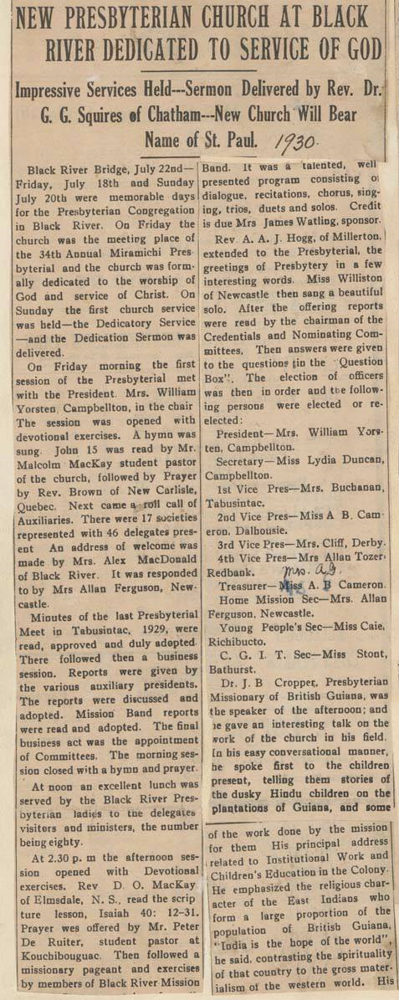
St.
Paul’s Dedication, July 18, 1930
Source
unknown and undated
H
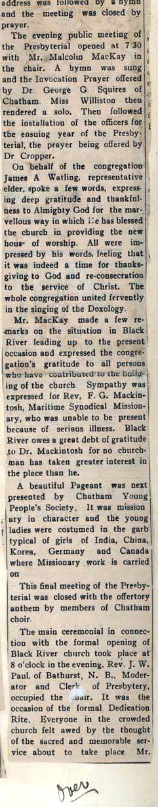

St. Paul’s Dedication, July 18, 1930
Source undated and unknown

St. Paul’s Dedication, July 18, 1930
Source undated and unknown

St. Paul’s Dedication, July 18, 1930

Misc.
clippings
Source
and Date unknown
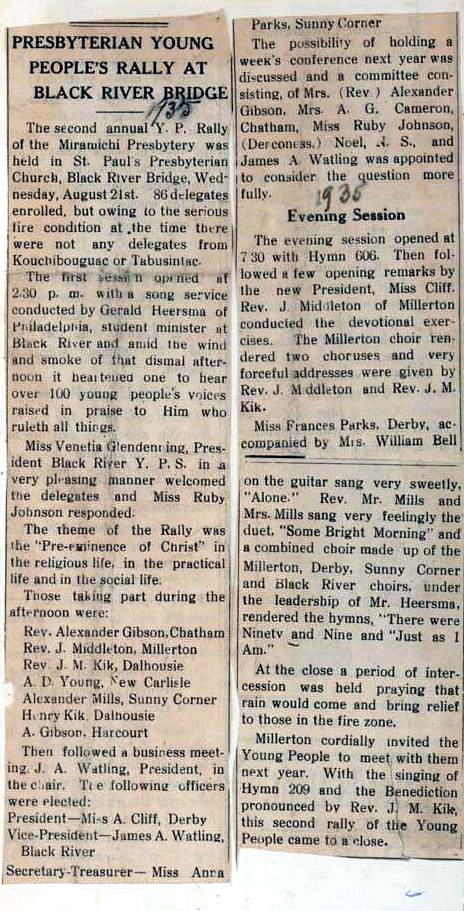
Miramichi
Presbytery 1935
Source
and Date Unknown
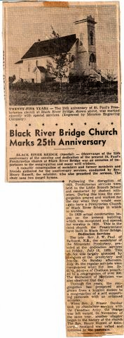
Anniversary
1955
Source
and date unknown

Anniversary
1965
Source
and date unknown

50th
Anniversary
Miramichi
Weekend, July 18, 1980

50th
Anniversary
Miramichi
Weekend, July 18, 1980

Anniversary
2005
Anniversary
2005
PHOTOS
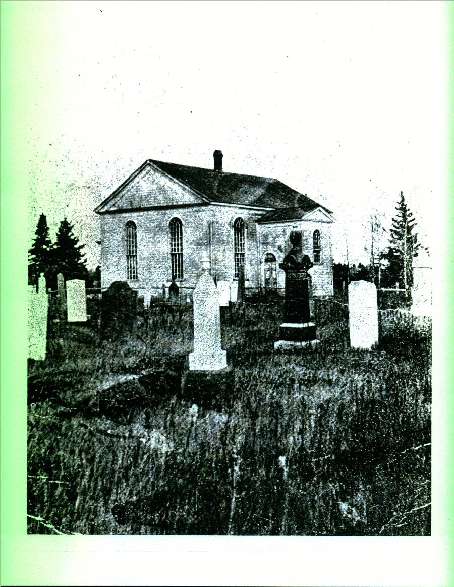
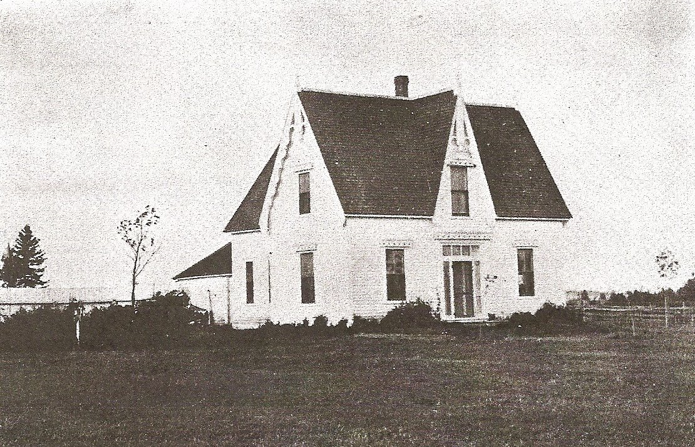
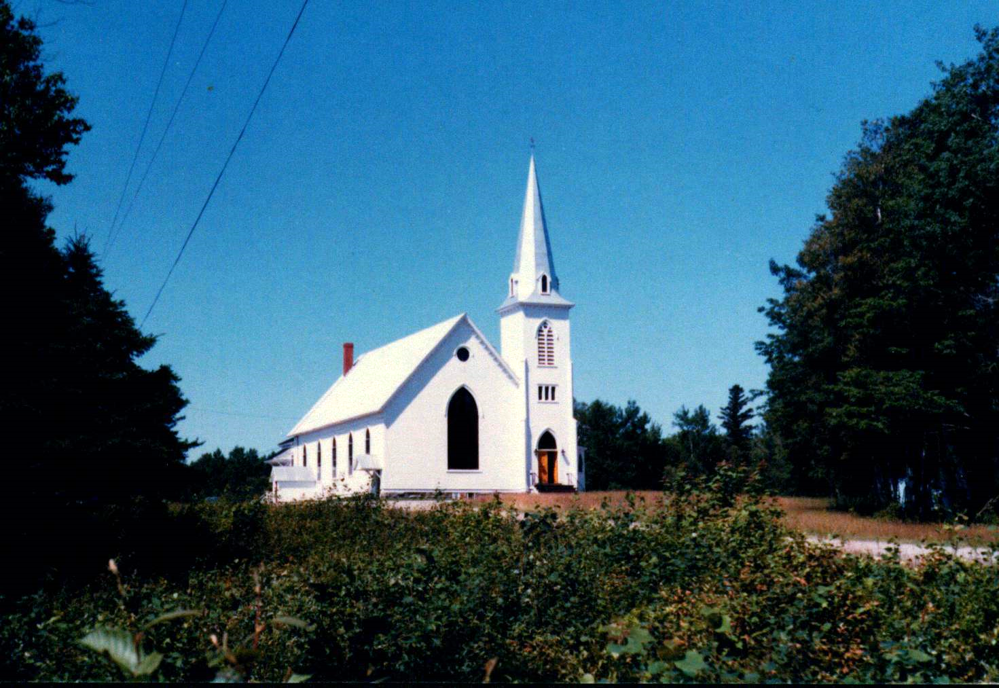
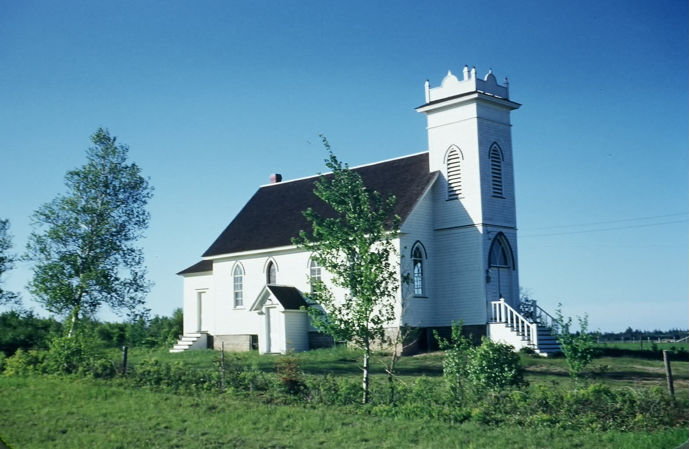
Above:
St. Paul’s
Presbyterian Church, Black River built in 1930 (Glendenning
collection)
Top Left
St. Stephen’s
Presbyterian Church, Black River built in 1834. A cairn in the
cemetery nearby marks the location of the original church. (Source
unknown)
Centre left:
St. Stephen’s
Presbyterian Manse, Black River, built in 1906. (Source unknown)
Bottom Left:
St. Stephen’s
Presbyterian Church, Black River built in 1906. (Glendenning
collection)

Church
picnic at Bayside
From
left: Edgar Fowlie,
Glendenning
collection

Summer
Bible School
Back
row: Kate Watling, Janie Cameron, Mrs. Burnham, Ruby ?
Row
four:
Row
three
Row
two;
Front
row
Glendenning
Collection
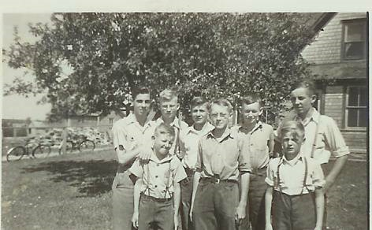
Scout
troop
Back
Row: Joseph MacLelland, student minister; Don Glendenning, George
Watling, Francis MacNaughton, Murray MacNaughton
Front
Row: Vance MacNaughton, Don Godfrey, Unknown
Glendenning
collection
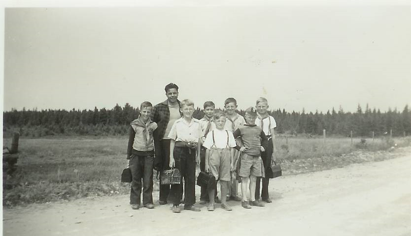
Scout
troop
Back
Row: Norval Robetson, student minister, George Watling, Murray
MacNaughton, Don Glendenning
Front
Row: Kenneth MacDonald, Don Godfrey, Unknown, Unknown
Glendenning
Collection

On
the way to church picnic at Bayside
From
the left: Unknown, Janie Cameron, Iona Cameron, Unknown, Unknown, Roy
Watling George Watling, Elinor Glendenning, , Kate Watling, Don
Glendenning Marjorie Watling, Unknown, Unknown
Glendenning
collection
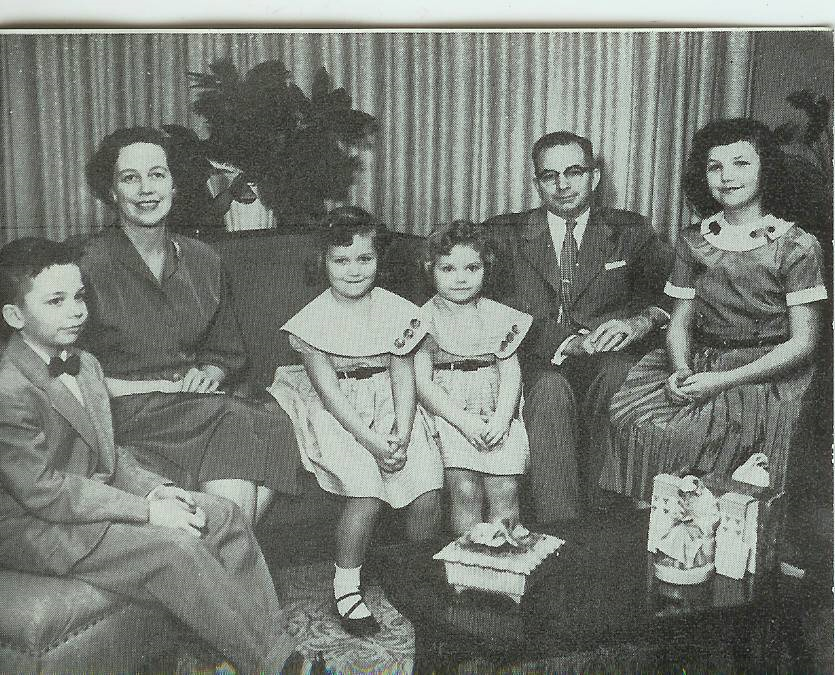
Rev.
Henry Kik and Family
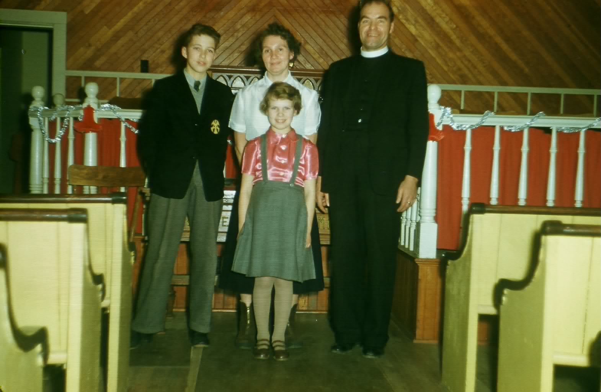
Rev.
Henry Russell and Family
Brian,
Mrs. Russell, Rev. Russell
Doreen
Glendenning
Collection
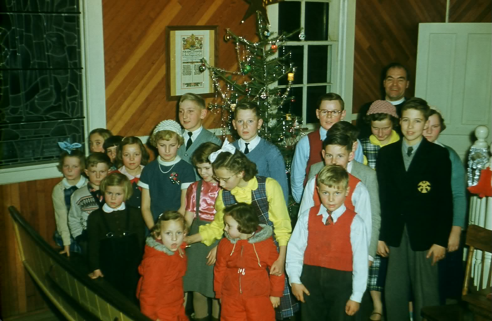
Young
people at St. Paul’s Presbyterian Church following Christmas
service in mid-1950’s.
Back
row: Rev. Henry Russell, Minister
Third
row: Lee Burnham, Aubrey Gibson, Alexander Newton, Margaret
Glendenning, Sandra Taylor
Second row: Diane
MacDonald(?), Esther Newton(/Virginia Taylor(?), Helen MacDonald,
Donna .Russell, Doreen Russell, Jeannie Glendenning, Donald Newton,
Gerald or David Taylor in front of Alexander Newton?, Brian Russell
Front Row: Lillian
Glendenning, Frank Taylor, Carolyn Newton, Eileen Glendenning, Judy
Glendenning, Norman Newton
Glendenning
Collection
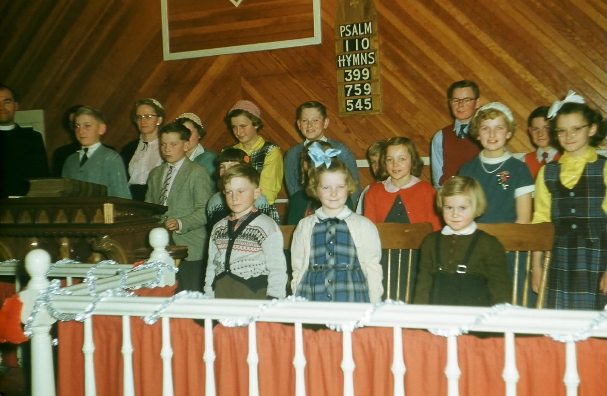
Young
people at St. Paul’s Presbyterian Church following Christmas
service, probably 1956.
Front
row: Frank Taylor, Lillian Glendenning, Carolyn Newton
Second
row: Lee Burnham, David/Gerald Taylor(?), Ginny/Esther(??), Doreen
Russell,
Helen
Mac Donald, Donna Russell, Jeanie
Glendenning
Back
Row Rev. Russell, Venetia Russell, Sandra Taylor, Margaret
Glendenning, Aubrey
Gibson,
Norman Newton(?), Alexander Newton, Donald Newton
Glendenning
Collection
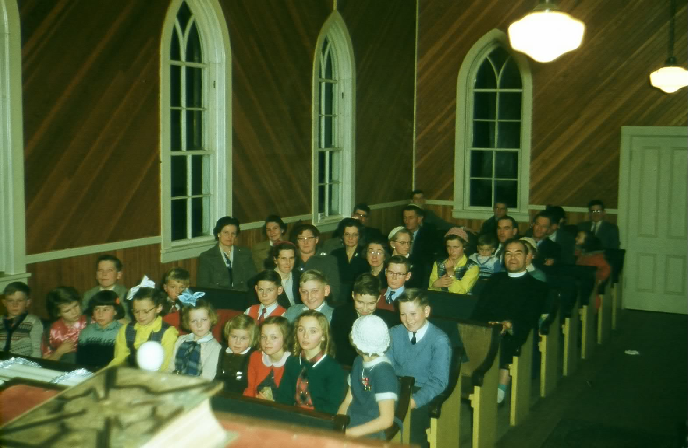
Congregation
Front
row:
Row
2:
Row
3:
Row
4:
Row
5:
Row
6
Row
7:
Row
8:
Rear
row;
Glendenning
Collection

On
occasion of 80th
Anniversary
Rev.
Kruny, Edith (Cameron) Bremner, Kenneth Glendenning, Don Glendenning
APPENDIX
5
ST.
PAUL’S W E D D I N G S
1936, August 26 Grace
Glendenning and Roy Smith - Rev. J. M. Kik
1937, August 4 Venetia
Glendenning and Cameron Russell- Rev. J. M. Kik
1958 ,January 31 Don
Glendenning & Carol Chesney- Rev. Wallace Whyte
1961, June 1 Dorothy
Bremner and Malcolm Taylor - Rev. Wallace Whyte & Rev.
G.B. Punter (United Church)
1962, June 29 Sandra
Taylor and Eugene Shea - Rev. Wallace Whyte
1965, May 15 Margaret
Glendenning and Aubrey Gibson - Rev. Wallace Whyte
1965, October
2 Marjorie Bremner and Carol Sweezey - Rev. Wallace Whyte & Rev.
Campbell (United Church)
1966, May 14 Virginia
Taylor and Benson Harris - Rev. Wallace Whyte
1968, June 29 Jeanie
Glendenning and Ray Williston - Rev. Wallace Whyte
1969, July 12 Donna
Russell and Vernon Goodfellow - Rev. Wallace Whyte
1971, August 27 Ruth
Bremner and John R. Walsh - Rev. D. Codling
1972, July 22 Janet
Bremner and William Cobb - Rev. D. Codling
1973, February 3 Judy
Glendenning and Paul Morton - Rev. Posno
1982, October
9 Loisanne Glendenning and Lynn Gregan - Rev. Blaikie
September 17,
1994 Amanda Taylor and Yves Manual - Rev. Crowell and
Father King
BAPTISMS AT ST. PAULS
Child’s Name Father’s Name Mother’s
Name Date of Birth Date of Baptism Minister
Kenneth Elmer
Glendenning Elmer Glendenning Jean E. Watling July 25, 1924
June 14 1926 Rev. F. G. MacIntosh
Norman Peters
Glendenning Elmer Glendenning Jean E. Watling Dec. 31, 1925
June 14, 1926 Rev. F. G. MacIntosh
Roy Mills Watling
James A. Watling Katherine C. Mills Feb. 6, 1926 June 14,
1926 Rev. F. G. MacIntosh
George Archibald
Watling James A. Watling Katherine C. Mills Aug. 11, 1928 Oct.
25, 1928 Rev. W. Stewart
Earl F. MacNaughton
Freeman MacNaughton Barbara MacLean Jan. 29,1929 Nov.17, 1929 Rev.
G. Sheridan
Marven Douglas MacLean
Rankin MacLean Bertha MacDonald Oct.1, 1929 Dec. 1, 1929 Rev.
G. Sheridan
Donald E. M.
Glendenning Elmer Glendenning Jean E. Watling Sept. 8,1929
July 20, 1930 Dr. Squires
Jesse Burns Adams
George Adams Minnie Bell June 24, 1930 July 20, 1930 Dr.
Squires
Kenneth Weldon
MacDonald Weldon MacDonald Margaret Cameron June 2, 1930 July
19, 1931 Rev. J. Paul
Gertrude Ida Adams
George Adams Minnie Bell Nov. 25, 1932 July 24, 1933 Rev. J.
Middleton
John Cameron MacDonald
Weldon MacDonald Margaret Cameron Jan. 5, 1933 July 24,
1933 Rev. J. Middleto
Catherine MacDougall
Frank MacDougall Inez MacDonald Aug 15, 1929 July 24,
1933 Rev. J. Middleton
Iva MacDougall Frank
MacDougall Inez MacDonald Nov. 18, 1932 July 24, 1933 Rev. J.
Middleton
Joyce Rita Cameron
Kenneth Cameron Eva Murdoch Jan 28, 1936 Apr. 30, 1936 Rev. A.
Gibson
Lawrence MacDougall
Frank MacDougall Inez MacDonald Oct. 15, 1931 July 24,
1933 Rev. J. Middleton
Rena Adams George
Adams Minnie Bell June 8 1935 Aug 22 1935 Rev. J.M. Kik
Lawrence Adams
George Adams Minnie Bell May 27 1937 Aug 15 1937 Dr. M.E.
Genge
Annie Kathleen Adams
George Adams Minnie Bell June 8 1938 Oct 20 1938 Rev.P.McK.
Sampson
James Neil Watling
James A Watling K. C.Mills Feb 26 1938 May 8
1938 Rev.P.McK.Sampson
Child’s Name Father’s Name Mother’s
Name Date of Birth Date of Baptism Minister
Kenneth David Cameron
Kenneth Cameron Eva Murdoch Feb 24 1938 May 8
1938 Rev.P.McK.Sampson
Isabel Maxine
MacDonald Weldon MacDonald Margaret Cameron May 31 1939 Aug 13
1939 Rev.P.McK. Sampson
Dorothy Isabel Bremner
George Bremner Edith Cameron Jan 24 1939 Aug 13 1939 Rev.P.McK.
Sampson
Glenn Cameron Russell
Cameron Russell Venetia GlendenningJuly 11 1939 Aug 13
1939 Rev.P.McK. Sampson
Gerald Ernest Taylor
Earl Taylor Elinor Glendenning July 6 1940 Sept 22 1940 Dr. M.E.
Genge
Stephen Walter
Glendenning Walter Glendenning Agnes Gibson Aug 14 1940 Sept 22
1940 Dr. M.E. Genge
Donald Alvin Young
Alvin Young Marjorie Watling Sept 23 1940 July 13 1941 Dr. M.E.
Genge
Leonard Byron Russell
Cameron Russell Venetia GlendenningFeb 13 1942 Sept 20 1942 Dr.
M.E. Genge
Robert Earl Taylor
Earl Taylor Elinor Glendenning May 9 1942 July 11 1943 Dr. M.E.
Genge
Sandra Jean Taylor
Earl Taylor Elinor Glendenning May 9 1943 July 11 1943 Dr. M.E.
Genge
Helen Alice Adams
George Adams Minnie Bell May 31 1942 Nov 7 1942 Dr. M.E. Genge
Joan Gertrude Adams
WillistonSterling Williston Grace Godfrey May 22,1933 July
24,1933 Rev. J. Middleton
George Edward Adams
Gordon Adams Bessie MacLeod Sept. 8,1942 Nov 7 1942 Dr. M. E.
Genge
Laura Minnie Belding
Frank Belding Eunice Adams Mar 26 1942 Nov 7 1942 Dr. M. E. Genge
John Vernon MacDonald
John MacDonald Marion MacNaughtonMar 29 1942 June 29 1943 Dr. M.
E. Genge
Robert Francis Edgar
Fowlie Edgar Fowlie Iona Cameron July 1 1943 May 14 1944 Rev.
D.C.MacDonald
Marjorie Blanche
Bremner George Bremner Edith Cameron Dec 2 1943 May 14 1944 Rev.
D.C.MacDonald
James Aubrey Gibson
Albert Gibson Marjorie McLaneghanMay 3 1944 June 4 1944 Rev.
D.C.MacDonald
Elizabeth Anne
Glendenning Walter Glendenning Agnes Gibson June 1 1944 July 23
1944 Rev. D.C.MacDonald
Barbara Helen
MacDonald John MacDonald Marion MacNaughtonAug 24 1943 Sept 3
1944 Rev. D.C.MacDonald
Margaret Virginia
Glendenning John Glendenning Mary Watling Aug 10 1944 Nov 12
1944 Rev. D.C.MacDonald
John Willard
MacDougall Frank MacDougall Inez MacDonald Jan 29 1935 Mar 3
1945 Rev. D.C.MacDonald
David Walter Taylor
Earl Taylor Elinor glendenning Mar 16 1945 July 22 1945 Rev.
D.C.MacDonald
Donna Marilyn Russell
Cameron Russell Venetia Glendenning Dec 15 1944 July 22
1945 Rev. D.C.MacDonald
Lawrence Gibson
Albert Gibson Marjorie McLaneghanJune 3 1934 Aug 12 1934 Rev. J.M.
Kik
Child’s Name Father’s Name Mother’s
Name Date of Birth Date of Baptism Minister
Melvin Burns Adams
Walter Adams Ida Duplassis Aug 23 1945 Sept 23 1945 Rev.
D.C.MacDonald
Chester William
Belding Frank Belding Eunice Adams Sept 6 1945 Sept 23 1945 Rev.
D.C.MacDonald
John Franklin
Glendenning John Glendenning Mary Watling Aug 21 1945 Oct 28
1945 Rev. D.C.MacDonald
David Cameron Bremner
George Bremner Edith Cameron Oct 18 1945 June23 1946 Rev.
D.C.MacDonald
Lola Evelyn Adams
Walter Adams Ida Duplassis Aug 29 1946 Sept 27 1946 Rev.
D.C.MacDonald
Donald Ernest Newton
Alex Newton Catherine MacLean Sept 12 1946 May 11 1947 Rev.
D.C.MacDonald
Virginia Elinor
Taylor Earl Taylor Elinor Glendenning Mar 29 1947 May 11
1947 Rev. D.C.MacDonald
Jean Elizabeth
Glendenning John Glendenning Mary Watling July 15 1946 May11
1947 Rev. D.C.MacDonald
Malcolm Keith
Glendenning Kenneth GlendenningVerne Taylor March 1 1947 May 11
1947 Rev. D.C.MacDonald
Hugh Frederick Godfrey
John A. Godfrey Margaret Cameron Mar 6 1947 May 11 1947
Rev. D.C.MacDonald
Janet Rita Bremner
George Bremner Edith Cameron Oct 30 1946 Sept 21 1947 Rev.
D.C.MacDonald
Reginald Cameron
Fowlie Edgar Fowlie Iona Cameron May 26 1947 Sept 21 1947 Rev.
D.C.MacDonald
Murray Allan Godfrey
John A. Godfrey Margaret Cameron Mar 7 1948 Sept 5 1948 Rev.
D.C.MacDonald
Norman Elliot Newton
Alex Newton Catherine MacLean Aug 5 1948 Sept 5 1948 Rev.
D.C.MacDonald
Diane Elizabeth
MacDonald John MacDonald Marion MacNaughton Mar 15 1947 Sept 5
1948 Rev. D.C.MacDonald
Minnie Peggy Adams
Gordon Adams Bessie MacLeod Oct 3 1946 Sept 11 1949 Rev.
D.C.MacDonald
Margeurite Bernice
Adams Gordon Adams Bessie MacLeod July 26 1948 Sept 11 1949
Rev. Gordon Brett
Lillian Shirley
Glendenning Walter Glendenning Agnes Gibson Apr 20 1950 June18
1950 Rev. Fraser Dunbar
Francis Elmer Taylor
Earl Taylor Elinor Glendenning Oct 29 1949 June18 1950 Rev.
Fraser Dunbar
Brian Robert MacLean
Harold MacLean Jennie MacLean May 2 1950 Nov1 1950 Rev. Fraser
Dunbar
Child’s Name Father’s Name Mother’s
Name Date of Birth Date of Baptism Minister
Ruth Adele Bremner
George Bremner Edith Cameron Nov 7 1949 Oct 15 1950 Rev.
Fraser Dunbar
Carolyn Anne Newton
Alex Newton Katherine MacLean Jan 20 1951 June 24 1951 Rev.
Fraser Dunbar
Ollie Richard Adams
Gordon Adams Bessie MacLeod Oct 25 1949 Sept 20 1951 Rev.
Fraser Dunbar
Hilda Catherine Adams
Gordon Adams Bessie MacLeod Aug 1 1951 Sept 20 1951 Rev.
Fraser Dunbar
Karen Joyce Bremner
George Bremner Edith Cameron Mar 26 1952 July 27 1952 Rev.
Fraser Dunbar
Kenneth Eldon Doring
Taylor Earl Taylor Elinor Glendenning Aug 17 1952 Oct 12 1952
Rev. Fraser Dunbar
Dorothy Eileen
Glendenning Norman Glendenning Jean Watling May 19 1952 Oct12
1952 Rev. Fraser Dunbar
Brenda Katherine
Holland Arthur Holland Marion M MacNaughton Aug 23 1951 Oct 13 195
Rev. Fraser Dunbar
Blaine Martin Holland
Arthur Holland Marion M MacNaughton Aug 23 1951 Oct 13 1952 Rev.
Fraser Dunbar
Nancy Ruth MacLean
Harold MacLean Jennie MacLean Mar 25 1952 Oct 13 1952 Rev.
Fraser Dunbar
Marion Esther Newton
Alex Newton Katherine MacLean Dec 26 1952 May 10 1953 Rev.
Fraser Dunbar
Judith Lynn
Glendenning N. Glendenning Jean Watling May 20 1953 Dec 20
1953 Rev. Fraser Dunbar
June Christina Barbara
McNairnHoward MacNairn Christina MacNaughton Sept 15 1953 Dec 20
1953 Rev. Fraser Dunbar
Judy Lee Taylor Wm
Arthur Taylor Joan Williston June 4 1954 Jan 2 1955
Rev.Henry Russell
Rodney Wm. Bernard
Taylor Wm Arthur Taylor Joan Williston Sept 13 1955 Jan 29
1956 Rev.Henry Russell
Alton Elmer
Glendenning Norman GlendenningJean Watling Jan 9 1955 Jan 29
1956 Rev.Henry Russell
Carla Louise
Glendenning Walter Glendenning Agnes Gibson June 27 1958 Aug
31 1958 Rev.W. E. Whyte
Lois Ann Glendenning
Norman GlendenningJean Watling May 19 1960 Jan 1 1961 Rev.W.
E. Whyte
Timothy David Taylor
Malcolm Taylor Dorothy Bremner Dec 1 1962 Feb 3 1963 Rev.W.
E. Whyte
Suzanne Kathleen
Russell Glenn Cameron RussellMarilyn Mae Ellis Jun 20 1962 Apr
14 1963 Rev.W. E. Whyte
Glenda Ruth Hamilton
John Hamilton Rena Adams Jun 23 1961 May 30 1963 Rev.W. E.
Whyte
Hope Arlene Hamilton
John Hamilton Rena Adams Dec 31 1962 May 30 1963 Rev..E.
Whyte
Paul Anthony Belding
Frank Belding Eunice Adams July 21 1962 May 30 1963 Rev.W.
E. Whyte
Gail Krista MacDonald
Leonard MacDonald Laura Belding April 26 1963 May 30 1963
Rev.W. E. Whyte
Darla Jean Shea
Eugine Shea Sandra Jean Taylor Dec 5 1962 Jan 16
1963 Rev.Wallace E.Whyte
Child’s Name Father’s Name Mother’s
Name Date of Birth Date of Baptism Minister
Robin James Taylor
Malcolm Taylor Dorothy Bremner April 8 1964 June 28 1964 Rev.W.
E. Whyte
Teena Ethel Taylor
William Taylor Joan Williston April 24 1959 Aug 2 1964 Rev.W. E.
Whyte
Sherri Grayce Taylor
William Taylor Joan Williston Sept 22 1961 Aug 2 1964 Rev.W.
E. Whyte
Karin Janet Taylor
William Taylor Joan Williston Jan 1 1963 Aug 2 1964 Rev.W. E.
Whyte
Grant William Belding
Frank Belding Eunice Adams Sept 2 1965 Sept 22 1965 Rev.W. E.
Whyte
Eric Norman Glendenning
Norman Glendenning Jean Watling Aug 26 1965 Jan 2 1966 Rev.W. E.
Whyte
Dale Phillys Taylor
Malcolm Taylor Dorothy Bremner Dec 1 1965 Apr 17 1966 Rev.W. E.
Whyte
Cheryl Anne Sweezey
Carl Sweezey Marjorie Bremner July 30 1966 Nov 13 1966 Rev.W.
E. Whyte
Kimberley Anne Newton
Norman Newton Patricia L Gregan Nov 7 1967 Jan 14 1968 Rev.W. E.
Whyte
Cynthia Helen MacDonald
Vernon MacDonald Shirley Jardine Mar 9 1968 Mar 19 1968 Rev.W. E.
Whyte
Gregory Mark Gibson
Aubrey Gibson Margaret GlendenningApril 13 1968 June 30
1968 Rev.W. E. Whyte
Jonathon Paul Russell
Leonard Russell Glenna Ellis Dec 1 1968 Apr 20 1969 Rev.W.
E. Whyte
Lorena Marlene Newton Francis Alexander
NewtonLorena Joyce BennettDec 30 1968 Jan Child’s Name
Father’s Name Mother’s Name Date of Birth Date of
Baptism Minister
29 1969 Rev.W. E. Whyte
Natalie Dawn Shea
Eugene Shea Sandra Taylor July 7 1969 Aug 24 1969 Rev.W. E.
Whyte
Eric Francis Newton
Francis Alexander NewtonLorena Joyce BennettAug 8 1971 Sept 12
1971 Rev. John P. Posno
Shawn Benson Harris
Benson Harris Virginia Taylor Jan 8 1970 Jan 23 1972 Rev.
John P. Posno
Krista Lynn Harris
Benson Harris Virginia Taylor Dec 15 1971 Jan 23 1972 Rev.
John P. Posno
Kirk Edward Shea
Eugene Shea Sandra Taylor June 11 1971 Jan 23 1972 Rev. John P.
Posno
Krista Lea Newton
Norman Newton Patricia Gregan March 3 1972 June 11 1972 Rev.
John P. Posno
Tanya Leah Watling
Gerald Watling Brenda Holland June 6 1973 Dec 23 1973 Rev. John
P. Posno
Child’s Name Father’s Name Mother’s
Name Date of Birth Date of Baptism Minister
Jennifer Lynn Sweezey
Carl Sweezey Marjorie Bremner Sept 7 1973 Mar 24 1974 Rev.
John P. Posno
Kelli Jean Morton
Paul Morton Judy Glendenning Apr 11 1974 June 16 1974 Rev. John
P. Posno
Valerie Elizabeth
Taylor Malcolm Taylor Dorothy Bremner March 23 1972 May 14
1972 Rev. John P. Posno
Mark Lyman Walsh
Jack Walsh Ruth Bremner March 10 1972 May 14 1972 Rev. John P.
Posno
Andrea Edith Cobb
William Dennis Cobb Janet Bremner April 8 1973 Sept 9 1973 Rev.
John P. Posno
Korena Kaye Newton
Norman Newton Patricia Gregan Jan 2 1975 March 30
197 Rev.John P. Posno
Natasha Janet Cobb
William Dennis Cobb Janet Bremner Nov 15 1974 May 11
1975 Rev. John P. Posno
Danny Paul Morton
Paul Morton Judy Glendenning May 26 1975 Nov 2 1975 Rev. John
P. Posno
Stacey Lynn Walsh
Jack Walsh Ruth Bremner March 30 1976 June 30 1976 Rev. John
P. Posno
Darla Maria Hamilton
John Matthew Hamilton Rena Burns Adams Nov 17 1973 Nov 8
1976 Rev. John P. Posno
Tyson William Cobb
William Dennis Cobb Janet Bremner Sept 20 1976 Dec 26
1976 Rev. John P. Posno
Janet Elaine Goodfellow
Donald Vernon Goodfellow Donna Marilyn RussellJune 20 1976 Dec 26
1976 Rev. John P. Posno
Gerri Allison Watling
Gerald Watling Brenda Holland Aug 21 1975 Dec 21 1975 Rev.
John P. Posno
Katherine Ann
Goodfellow Donald Vernon Goodfellow Donna Marilyn Russell Jan 1
1978 June 25 1978 Rev. John P. Posno
Allyson Karen Cobb
William Dennis Cobb Janet Bremner Jan 11 1979 April 8
1979 Rev. John P. Posno
Amy Lynn Goodfellow
Donald Vernon Donna Marilyn Feb 26 1980 Feb 1 1981 Rev. D. E.
Blaikie
Nicholas Sylvain
Hudon Sylvain Hudon Karen Bremner Dec 10 1979 Sept 27 1981 Rev. D.
E. Blaikie
Jonathon Maurice
Hudon Sylvain Hudon Karen Bremner March 18 1982 June 6 1982 Rev.
D.E. Blaikie
Cameron Richard
GoodfellowVernon Donna Feb 11 1982 Dec 12 1982 Rev. D. E.
Blaikie
James Lee Andrew
Burnham Lee Burnham Bernadette Burnham Nov 6 1983 June 16
1985 Rev.D. E. Blaikie
Christopher Joseph
Gregan Lynn Gregan Loisanne Glendenning May 21 1986 Aug 24
1986 Rev. D E. Blaikie
ST.
PAUL’S W E D D I N G S
1936, August 26 Grace
Glendenning and Roy Smith - Rev. J. M. Kik
1937, August 4 Venetia
Glendenning and Cameron Russell- Rev. J. M. Kik
1958 ,January 31 Don
Glendenning & Carol Chesney- Rev. Wallace Whyte
1961, June 1 Dorothy
Bremner and Malcolm Taylor - Rev. Wallace Whyte & Rev.
G.B. Punter (United Church)
1962, June 29 Sandra
Taylor and Eugene Shea - Rev. Wallace Whyte
1965, May 15 Margaret
Glendenning and Aubrey Gibson - Rev. Wallace Whyte
1965, October
2 Marjorie Bremner and Carol Sweezey - Rev. Wallace Whyte & Rev.
Campbell (United Church)
1966, May 14 Virginia
Taylor and Benson Harris - Rev. Wallace Whyte
1968, June 29 Jeanie
Glendenning and Ray Williston - Rev. Wallace Whyte
1969, July 12 Donna
Russell and Vernon Goodfellow - Rev. Wallace Whyte
1971, August 27 Ruth
Bremner and John R. Walsh - Rev. D. Codling
1972, July 22 Janet
Bremner and William Cobb - Rev. D. Codling
1973, February 3 Judy
Glendenning and Paul Morton - Rev. Posno
1982, October
9 Loisanne Glendenning and Lynn Gregan - Rev. Blaikie
September 17,
1994 Amanda Taylor and Yves Manual - Rev. Crowell and
Father King
FUNERALS
FROM ST. PAUL’S
1969, December
26 Earle A. Taylor
1973, February
23 Elinor Jean (Glendenning) Taylor
1976, September
19 Mrs. James R. Cameron
November
17 Jack Hamilton
1979, August 25 Donald
Cameron Russell
1983, November 25,
James A. Watling
1985, June Mrs.
George Adams
1986, June 26 John
Franklin Glendenning
1988, March 9 Bert
Gibson
July
22 Alex Newton
1989, December
26 Grace (Godfrey) Williston
1998, June 20 Walter
Jubal Glendenning
2000, November
13 Marjorie (McLenaghan) Gibson
2001, July
29 Catherine (MacLean) Newton
2003, June 10 Agnes
Elspeth (Gibson) Glendenning
Mrs. Keeping
MINISTERS
St. Stephen’s Presbyterian Church
l
Rev. Simon Fraser 1834-1840
Rev.
Angus McMaster 1842-1845
Rev.
John Turnbull 1848-
Rev.
Demster Wallace
Rev.
Stevenson 1854-
Rev.
Forbes
Rev.
James Fowler 1857-
Rev.
Robert Faulkner 1860-1863
Rev.
Frederick Holme
Rev.
A Glendenning
Rev.
Samuel Russell 1873-1876
Rev.
William Fogo 1876-1877
Rev.
John Robertson 1877-1904
Rev.
A. J. W. Myers 1905-1909
Rev.
George Grant 1910-1916
Rev.
J. M. Fraser 1917-1919
Rev.
Dr. Thomas Harrison 1919-1926
St. Paul’s Presbyterian Church
Rev. Thornley Smith 1926
(May-Nov)
Rev.
William West 1928 (May-Sept)
Rev.
F. E. Lloyd 1928 (Oct.-Dec)
Rev.
M. MacKay
Rev.
Dr. Squires 1930 (Oct-Nov)
Rev.
James Jardine 1930 (Dec-Apr)
Rev.
Burton Andrew 1931 (May-Sept)
Rev.
J. Rossborough 1931 (Oct-Dec)
Rev.
James Jardine 1932 (Jan-Mar)
Rev.
J. Barnes 1932 (May-Sept)
Rev.
J. M Campbell 1932 (Oct-June)
Rev.
Henry Kik 1933 (Jul-Sept)
Rev.
H. Fitzsimons 1933 (Nov-Dec)
Rev.
A. R. Gibson 1934 (May-July)
Rev.
G. Heersma 1934 (July-Sept)
1935
(May-Sept)
1936
(May-Sept)
Rev.
J. O. Denny 1937 (May-Sept)
Rev.
David MacLelland1938 (May-Sept)
1939
(May-Sept)
Rev.
Eldon Andrews 1940 (May-Sept)
Rev.
Norval Robertson
1941
(May-Sept)
1942
May-Sept)
1943
(May-Sept)
Rev.
Joseph MacLelland
1944 (May-Sept)
Rev.
D. C. MacDonald 1945 (May-Oct)
Rev.
Alex Orr 1946 (May-Oct)
Rev.
Irwin MacElwaine
1947
(May-Oct)
1948
(May-Oct)
Rev.
Lawrence Blaikie 1949 (Alternate)
Rev.
H. MacCormack 1949 (Alternate)
Rev.
L. Blaikie 1950 (Jan-June)
Rev.
Fraser Dunbar 1950
Rev.
Lawrence Blaikie 1951 (
1952
(
1953
(Jan-May)
Rev.
G. Lewis 1953 (June-Dec)
Rev.
Henry Russell 1954-1957
Rev.
J. Colter 1957
Rev.
R. Ross 1957
Rev.
Wallace Whyte 1957-1969
Rev.
A. Fawthrop 1969-1971
Rev.
George Scott 1971
Rev.
John Posno 1971-1979
Rev.
Douglas Blaikie 1980-1987
Rev.
William McKaig 1988-1991
Dr.
Philip Crowell 1993-2003
Rev
Derek Krunys 2003-
CHURCH
OFFICIALS
Elders James
A Watling
James F. Godfrey
Rankine MacLean
Cameron Russell
William Burnham
Alex Newton
Bert Gibson
Kenneth Glendenning
Lee Burnham
Alton Glendenning
Clerks
of Session James F. Godfrey
James A. Watling
Cameron Russell
Kenneth Glendenning
Organists Kate
Watling
Grace Williston
Venetia Russell
Catherine Newton
Trustees/Board
of Managers
Representative
Elder James A Watling
John MacDonald
Deaconesses
HONOUR
ROLL
SOME
FIRSTS AT ST PAUL’S
Some firsts:
baptized
1926 - John
Robertson Women’s Missionary Society formed
1926 - Sunday
School established
1926 - Mission
Band formed
1928 -
September 30 - Session meeting
1930 - Young
Peoples Society organized
1930, July 18 -
Miramichi Presbyterial met at St. Paul’s
1930, July 18 -
St. Paul’s Presbyterian Church formally dedicated
1930, July 20 -
regular service of worship conducted Dr. George C. Squires
of Chatham.
Adams, and Donald Ernest Malcolm Glendenning, son of Mr.
and Mrs. Elmer Glendenning.
Morrison Smith
MEMORIALS AND GIFTS TO ST. PAUL’S
Pulpit Bible
presented by Mrs. Atkinson, Kouchibouguac, NB
Organ donated by
Robert Anderson
Communion Set in
memory of Mr. And Mrs. Kenneth MacDonald
Communion Table
given by Mrs. Allan MacKay
Stained glass
window depicting The Good Shepherd given in memory of Mr. and Mrs.
Robert MacDougall, by their niece, Mrs. Emma Trevors
Stained glass
memorial window given in memory of the Allan Family by Mrs. James.
R. Cameron
Church bell and
Baptismal Cup given by Mr. And Mrs. Walter Glendenning in memory of
their daughter, Betty Anne
Carpet for aisle
and choir stand given by Mr. And Mrs., Arnold Prosser in memory of
Mrs. Rankine MacLean
Pulpit Fall given
in memory of Mrs. James A. Watling by her family
Renovation of the
basement with money donated by Mrs. Annie MacNaughton in memory of
her husband, Sandy, and daughter, Marjorie MacLean
Pulpit Chair
given in memory of Mr. And Mrs. E. A. Glendenning by the family
Pulpit light
donated by Miss Elspeth Allan in memory of Mrs. James R. Cameron
Two dozen
hymnbooks given by the MacLean Family in memory of Mr. And Mrs.
Rankine MacLean and their brother, John
Two dozen
hymnbooks in memory of Cameron Russell by the congregation
Hammond organ
Console cabinet
in memory of Cameron Russell by Venetia Russell and family
Storm windows
installed in memory of John Glendenning by donations to the
Memorial fund
Memorial window
in memory of John Glendenning by Mary Glendenning and family
Hymnbooks and
piano lamp in memory of Grace Williston by the congregation
Bible Stand and
offering plates in memory of Elders Bert Gibson, Alex Newton and
William Burnham given by the congregation
Brass vases in
memory of James and Katherine Watling by the family
Public address
system in memory of the founding Families by the congregation
Nine Bibles in
memory of Judy (Glendenning) Morton by the family
Flag and stand
donated by Venetia Russell
BIBLIOGRAPHY
This
paper relies heavily on the following sources:
Black
River and its First Settlers by A. W. MacDougall
A
number of papers entitled History of St. Paul’s Presbyterian
Church, Black River, NB (Dates and authors unknown)
Church
Union in Pictou Presbytery, 1925 by Dr. John R. Cameron, 1969.
Memoir
of Rev. James MacGregor, DD, by Rev. George Patterson
(Grandson), Philadelphia, 1859.
St.
Stephen’s Church Black River, N.B. by Ernie MacLean in
Generations Spring Issue 2001
N.
Keith Clifford, The Resistance to Church Union in Canada,
1904-1939, Vancouver: UBC Press, 1985
Church
minutes, clippings, photos and notes from a variety of sources but
now available in an album put together by St. Paul’s Presbyterian
Church in 2003.
Conversations
with family, church members, adherents and friends